<!doctype html>
<html lang="en">
<head>
  <meta charset="utf-8">
  <meta name="viewport" content="width=device-width, initial-scale=1">
  <title>arxiv digest — 2026-07-03</title>
  <style>
:root {
  --bg: #ffffff;
  --fg: #1f2328;
  --muted: #59636e;
  --border: #d0d7de;
  --card: #f6f8fa;
  --link: #0969da;
}
body {
  max-width: 980px;
  margin: 0 auto;
  padding: 2rem 1rem 5rem;
  font-family: -apple-system, BlinkMacSystemFont, "Segoe UI", Helvetica, Arial, sans-serif;
  line-height: 1.55;
  color: var(--fg);
  background: var(--bg);
}
a { color: var(--link); }
img { max-width: 100%; height: auto; }
pre, code { background: var(--card); border-radius: 6px; }
pre { padding: 1rem; overflow-x: auto; }
blockquote { border-left: 4px solid var(--border); padding-left: 1rem; color: var(--muted); }
details { margin: 0.6rem 0; }
summary { cursor: pointer; font-weight: 600; }
.paper-figures-scroll {
  display: flex;
  gap: 1rem;
  overflow-x: auto;
  overscroll-behavior-x: contain;
  padding: 0.75rem 0.25rem 1rem;
  margin: 1rem 0 1.25rem;
  border-top: 1px solid var(--border);
  border-bottom: 1px solid var(--border);
  scroll-snap-type: x proximity;
}
.paper-figure-card {
  flex: 0 0 min(260px, 72vw);
  scroll-snap-align: start;
  background: var(--card);
  border: 1px solid var(--border);
  border-radius: 12px;
  padding: 0.55rem;
}
.paper-figure-card img {
  display: block;
  width: 100%;
  max-height: 240px;
  object-fit: contain;
  background: white;
  border-radius: 8px;
}
.paper-figure-caption {
  display: block;
  margin-top: 0.5rem;
  color: var(--muted);
  font-size: 0.85rem;
}
.figure-strip-hint {
  color: var(--muted);
  font-size: 0.9rem;
  margin-bottom: -0.3rem;
}
</style>
  <!-- MathJax: renders $...$ inline math and $$...$$ display math, plus
       \(...\) and \[...\]. Loaded from the official CDN; works offline
       once cached. Configured to skip code/pre blocks so arxiv IDs that
       look like dollar amounts don't get mangled. -->
  <script>
    window.MathJax = {
      tex: {
        inlineMath: [['$', '$'], ['\\(', '\\)']],
        displayMath: [['$$', '$$'], ['\\[', '\\]']],
        processEscapes: true,
        processEnvironments: true
      },
      options: {
        skipHtmlTags: ['script', 'noscript', 'style', 'textarea', 'pre', 'code'],
        ignoreHtmlClass: 'tex2jax_ignore',
        processHtmlClass: 'tex2jax_process'
      }
    };
  </script>
  <script id="MathJax-script" async
    src="https://cdn.jsdelivr.net/npm/mathjax@3/es5/tex-chtml.js"></script>
</head>
<body>
<header style="background-color: #333; color: white; padding: 15px; margin-bottom: 20px;">
  <h1 style="margin: 0; font-size: 24px;">
    <a href="https://ochelpan.github.io/arXiv_clean/" style="color: white; text-decoration: none;">Main</a>
  </h1>
</header>

<h1>Daily arXiv Report</h1>

<hr>
<p>
<a href="index.html">← Index</a>
 · <a href="papers_02.html">Next →</a>
</p>
<hr>

<h2>Papers 1–20</h2>
<p><a id="paper-2607.00557"></a></p>
<h3 id="configuration-based-understanding-of-superradiant-phase-transitions-in-dicke-lattices"><a href="http://arxiv.org/abs/2607.00557v1">Configuration-based understanding of superradiant phase transitions in Dicke lattices</a></h3>
<p><strong>Authors:</strong> Peng-Fei Wei, Zhihai Wang<br>
<strong>Type:</strong> theory · <strong>Category:</strong> other · <strong>PDF:</strong> <a href="https://arxiv.org/pdf/2607.00557v1">https://arxiv.org/pdf/2607.00557v1</a><br>
<strong>Analysis basis:</strong> full PDF text, analyzed in chunks
<strong>Topic relevance:</strong> 🔥 <code>Dicke superradiance</code> <strong>5/5</strong> · 🔥 <code>analog quantum simulation</code> <strong>4/5</strong> · 🔥 <code>correlated / nonlocal dissipation</code> <strong>4/5</strong> · 🔥 <code>driven-dissipative phase transition</code> <strong>4/5</strong> · 🔥 <code>methods for driven-dissipative</code> <strong>4/5</strong> · <code>Tavis-Cummings &amp; cavity-many-emitter</code> <strong>3/5</strong> · <code>correlated cavity matter</code> <strong>3/5</strong> · <code>non-equilibrium universality</code> <strong>3/5</strong> · <code>non-equilibrium dynamics</code> <strong>2/5</strong> · <code>superradiant laser</code> <strong>2/5</strong> · <code>Keldysh / 2PI / non-Gaussian methods</code> <strong>1/5</strong> · <code>entanglement &amp; information structure</code> <strong>1/5</strong> · <code>exotic spin models in light-matter</code> <strong>1/5</strong></p>
<div class="figure-strip-hint">↔ Scroll figures horizontally</div>
<div class="paper-figures-scroll">
<figure class="paper-figure-card">
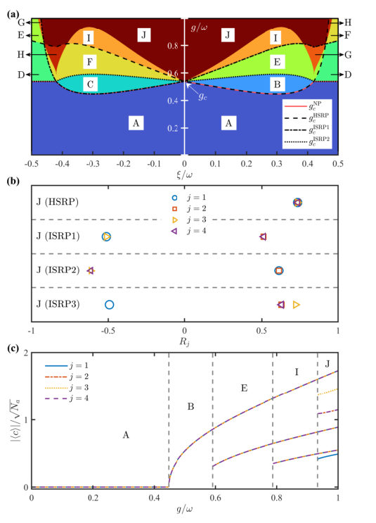
<figcaption class="paper-figure-caption"><b>Fig 1.</b> Figure 1. (a) Phase diagram for the open Dicke lattice model with N = 4. (b) The real part of order parameter Rj about each site with ξ = 0.1ω and g = 0.8ω. (c) Plot of the order parameter |⟨cj⟩|/√Na = p</figcaption>
</figure>
<figure class="paper-figure-card">
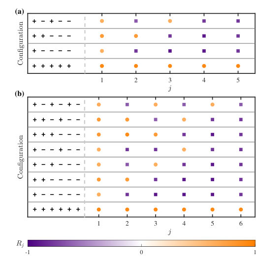
<figcaption class="paper-figure-caption"><b>Fig 2.</b> Figure 2. The representative configuration for (a) N = 5 and (b) N = 6. The parameters are set to ωa = ωc = ω, κ = 0.4ω, g = 0.8ω and ξ = 0.1ω.</figcaption>
</figure>
<figure class="paper-figure-card">
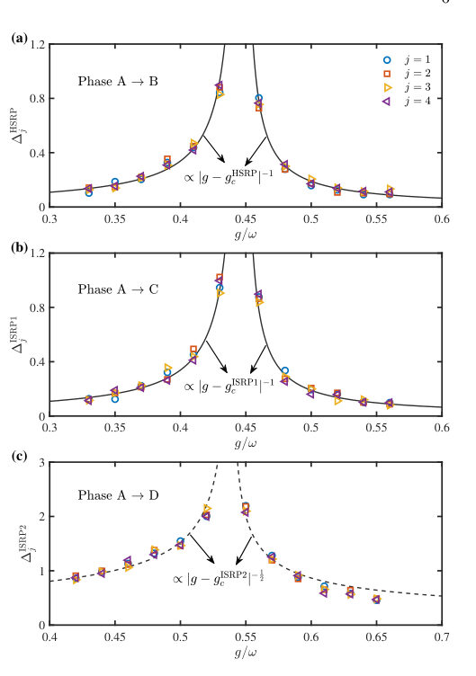
<figcaption class="paper-figure-caption"><b>Fig 3.</b> Figure 3. On-site fluctuations ∆j in the vicinity of the critical coupling for (a) Phase A-B (ξ = 0.3ω), (b) Phase A-C (ξ = −0.3ω), and (c) Phase A-D (ξ = 0.48ω). Other parameters are set to ωa = ωc = ω and κ = 0.4ω.</figcaption>
</figure>
<figure class="paper-figure-card">
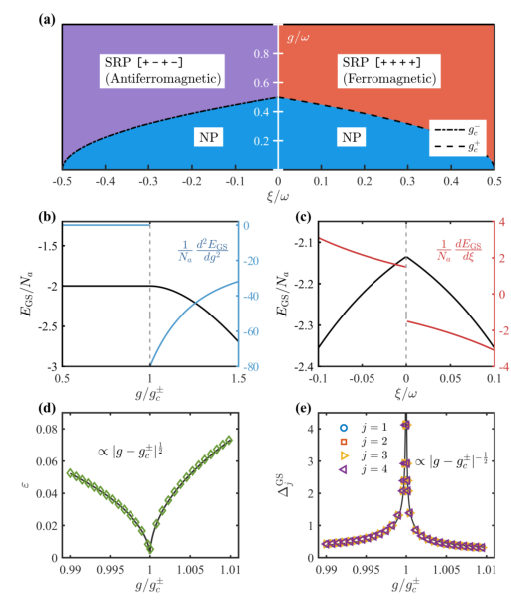
<figcaption class="paper-figure-caption"><b>Fig 4.</b> Figure 4. (a) Phase diagram for the Dicke lattice model with N = 4. (b) The ground-state energy and its second-order derivative as a function of g/g± c . (c) The ground-state energy and its first-order derivative (red line) as a function of ξ with g = 0.6ω. (d) The lowest excitation energies ε as a function of the coupling strength g/g± c . (e) The on-site fluctuations of the ground state as a function of g/g± c . Other parameters are set to ωa = ωc = ω and ξ = ±0.3ω.</figcaption>
</figure>
</div>

<p><strong>Summary.</strong> The paper introduces a configuration-based framework to unify the understanding of superradiant phase transitions in Dicke lattices. By classifying stable configurations based on lattice symmetry, it maps out complex, multi-stable phase diagrams for both open (dissipative) and closed quantum systems. This provides a comprehensive picture connecting local atomic/photonic arrangements to global thermodynamic behavior.</p>
<p><strong>Why it may be interesting.</strong> This work provides a powerful structural tool (configuration-based understanding) to organize complex many-body dynamics in open quantum systems like cavity QED arrays, unifying disparate findings on multistability and phase transitions.</p>
<details>
<summary>Detailed structure</summary>
<p><strong>Main problem.</strong> The primary goal is to develop a unified, configuration-based understanding of how multistability arises and relates different superradiant phases in Dicke lattices.</p>
<p><strong>Main result.</strong> The authors classify superradiant phases based on lattice symmetry configurations, demonstrating that the system can exhibit up to four stable phases for $N=4$ sites. They also contrast the behavior between dissipative (nonequilibrium) and closed (equilibrium) systems regarding universality classes.</p>
<p><strong>Method.</strong> The analysis employs a mean-field approach derived from the Lindblad master equation for the open system, supplemented by stability analysis via linearization around steady states. For equilibrium, ground state energy minimization is used.</p>
<p><strong>Model / system.</strong> The model is the Dicke lattice, consisting of coupled atom-resonator units on a 1D lattice ($N$ sites). The dynamics are governed by a Hamiltonian and dissipation (Lindblad equation), incorporating photon hopping ($\xi$).</p>
<p><strong>Key observables.</strong> Superradiant phases (NP vs. SRP), local order parameters ($R_j, I_j$), coexistence of stable steady states, and critical exponents ($\gamma_{open}, \gamma_{closed}$).</p>
<p><strong>Important parameters / regimes.</strong> Photon hopping strength ($\xi$), dissipation rate ($\kappa$), coupling strengths ($g$), and lattice size ($N=4, 5, 6$).</p>
<p><strong>Assumptions / limitations.</strong> The analysis relies on the mean-field approximation for correlations ($\langle AB 
angle \simeq \langle A 
angle \langle B 
angle$) and sometimes uses the Discrete Truncated Wigner Approximation (DTWA).</p>
<p><strong>Figures summary.</strong> Figures illustrate representative superradiant configurations for $N=5$ and $N=6$, and show scaling behavior of on-site fluctuations ($\Delta_j$) near critical couplings.</p>
<p><strong>Paper structure.</strong> The paper first establishes the physical model and then develops a configuration classification scheme. It analyzes the dissipative case to map out the phase diagram, followed by an extension to the closed lattice to compare equilibrium vs. nonequilibrium universality classes.</p>
</details>
<details>
<summary>Abstract</summary>
<p>The emergence of multiple superradiant phases in Dicke lattice models has attracted considerable attention in the quantum optics community. However, a unified understanding of the origin of multistability and its relation to different superradiant phases is still lacking. Here, we develop a configuration-based understanding to classify the superradiant phases in Dicke lattices. We show that photon hopping naturally organizes the possible superradiant configurations according to the lattice symmetry, providing a unified interpretation of the nonequilibrium phase diagram and the emergence of multistability. For the dissipative four-site Dicke lattice, we obtain the complete phase diagram and identify the coexistence of up to four stable superradiant phases. The proposed classification is further extended to five- and six-site lattices. Moreover, we demonstrate that the same configuration-based understanding also applies to the closed Dicke lattice, where the ground state uniquely selects one of the allowed configurations. Finally, we show that different configurations may belong to either same or distinct nonequilibrium universality classes in the dissipative Dicke lattice, while they share the same equilibrium universality class in the closed Dicke lattice. Our results provide a unified picture for understanding equilibrium and nonequilibrium superradiant phase transitions in Dicke lattices.</p>
</details>
<p><sub><a href="#top">↑ back to top</a></sub></p>

<p><a id="paper-2607.00131"></a></p>
<h3 id="work-statistics-under-quantum-jump-and-quench-dynamics-in-monitored-ising-chains"><a href="http://arxiv.org/abs/2607.00131v1">Work Statistics Under Quantum-Jump and Quench Dynamics in Monitored Ising Chains</a></h3>
<p><strong>Authors:</strong> Manali Malakar, Alessandro Silva<br>
<strong>Type:</strong> theory · <strong>Category:</strong> statistical mechanics · <strong>PDF:</strong> <a href="https://arxiv.org/pdf/2607.00131v1">https://arxiv.org/pdf/2607.00131v1</a><br>
<strong>Analysis basis:</strong> full PDF text, analyzed in chunks
<strong>Topic relevance:</strong> 🔥 <code>measurement-induced transitions</code> <strong>5/5</strong> · 🔥 <code>non-equilibrium dynamics</code> <strong>4/5</strong> · 🔥 <code>quantum measurements</code> <strong>4/5</strong> · <code>methods for driven-dissipative</code> <strong>3/5</strong> · <code>non-equilibrium universality</code> <strong>3/5</strong> · <code>Keldysh / 2PI / non-Gaussian methods</code> <strong>1/5</strong> · <code>correlated / nonlocal dissipation</code> <strong>1/5</strong> · <code>driven-dissipative phase transition</code> <strong>1/5</strong></p>
<div class="figure-strip-hint">↔ Scroll figures horizontally</div>
<div class="paper-figures-scroll">
<figure class="paper-figure-card">

<figcaption class="paper-figure-caption"><b>Fig 1.</b> FIG. 1. Work distribution P(W) under stochastic quantum-jump dynamics in a monitored transverse-field Ising chain without quench (Hi = Hf), for system size L = 80, transverse field h = 0.4, averaged over 200 stochastic realizations. Solid red lines show the numerically constructed P(W) and black dashed curves are Gaussian fits with the same mean and variance. (a) No monitoring (γt = 0): the characteristic function reduces to G(u) = 1 and the work distribution collapses to a single delta peak P(W) = δ(W) at W = 0. (b) Weak monitoring (γt = 0.1): rare jumps create a comb of narrow side peaks at W &gt; 0 on top of the dominant W = 0 peak, reflecting discrete excitation pathways and residual...</figcaption>
</figure>
<figure class="paper-figure-card">
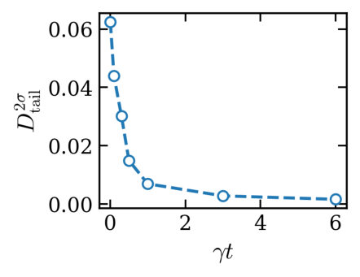
<figcaption class="paper-figure-caption"><b>Fig 2.</b> FIG. 2. Variation of the tail deviation D(2σ) tail with the cumulative monitoring strength γt at transverse field h = 0.6. The decrease of D(2σ) tail indicates that the work distribution P(W) approaches its Gaussian reference PG(W) as monitoring becomes stronger, con- sistent with the behavior shown in Fig. 1. Parameters: L = 60, averaged over 500 stochastic realizations.</figcaption>
</figure>
<figure class="paper-figure-card">

<figcaption class="paper-figure-caption"><b>Fig 3.</b> FIG. 3. Work cumulants under stochastic jump dynamics with no quench, Hi = Hf, for a system size L = 60, averaged over 500 stochastic realizations. (a) Mean work ⟨W⟩as a function of the cumulative monitoring strength γt at fixed transverse field h = 0.15. (b) Corresponding work variance σ2 W . The mean work increases rapidly and then saturates, whereas the variance shows a pronounced maximum before relaxing to a plateau. (c) Mean work as a function of the transverse field h at fixed γt = 4. The mean work varies only weakly at small and intermediate h, and decreases at larger h. (d) Corresponding work variance, showing that increasing h broadens the distribution of final-energy outcomes even...</figcaption>
</figure>
<figure class="paper-figure-card">

<figcaption class="paper-figure-caption"><b>Fig 4.</b> FIG. 4. Per-jump energy increment ∆Ej as a function of jump in- dex j for system size L = 1024. (a) In the gapped ferromagnetic phase at h = 0.5, ∆Eout j remains strictly constant with respect to j, while ∆Ein j drops at early j and then saturates. Inset: zoomed view of ∆Eout j confirming its j-independence. (b) At the critical point h = 1.0, algebraic correlations render even the outside-cone ∆Eout j weakly j-dependent, as revealed in the inset, whereas the inside-cone ∆Ein j still decays and saturates but more slowly.</figcaption>
</figure>
<figure class="paper-figure-card">
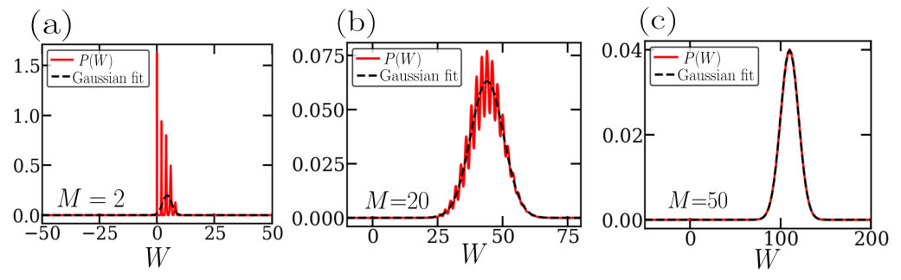
<figcaption class="paper-figure-caption"><b>Fig 5.</b> FIG. 5. Work distribution P(W) in the controlled jump protocol with equally spaced jumps in space and time, illustrating the progression toward Gaussianity with increasing number of jumps M for system size L = 300, h = 0.2, and total time t = 1. (a) For M = 2, P(W) displays a dominant central peak at W = 0 indicative of minimal energy injection, accompanied by multiple discrete peaks at W &gt; 0, reflecting a small set of coherent excitations and preserved coherences. (b) For M = 20, the distribution develops a bell-shaped core but retains residual spikes from incomplete dephasing. (c) For M = 50, P(W) achieves a fully smooth profile that closely overlaps with the Gaussian fit with the same...</figcaption>
</figure>
</div>

<p><strong>Summary.</strong> This paper analyzes the statistics of work done on monitored Ising chains under quantum quenches and stochastic measurements. It demonstrates that frequent monitoring drives the system's work distribution towards Gaussian behavior, while controlled jumps reveal distinct linear versus sublinear growth rates based on causal correlations. This offers deep insights into how measurement backaction shapes non-equilibrium thermodynamics.</p>
<p><strong>Why it may be interesting.</strong> It provides a quantitative framework for understanding how measurement backaction fundamentally alters non-equilibrium thermodynamics, moving beyond simple average energy calculations to characterize fluctuations in work.</p>
<details>
<summary>Detailed structure</summary>
<p><strong>Main problem.</strong> The study investigates how work statistics evolve in monitored quantum systems subjected to both quantum quenches and continuous measurement processes.</p>
<p><strong>Main result.</strong> Frequent monitoring drives the work distribution towards an essentially Gaussian form, while controlled measurements reveal distinct growth regimes depending on whether energy increments are causally disconnected or correlated within a light cone.</p>
<p><strong>Method.</strong> The analysis employs deriving trajectory-resolved generating functions for work statistics and evaluating them using fermionic Gaussian-state formalisms.</p>
<p><strong>Model / system.</strong> The system is the transverse-field Ising chain, whose dynamics are governed by stochastic quantum jumps (unraveling of a Lindblad master equation) or controlled deterministic projections.</p>
<p><strong>Key observables.</strong> Work distribution P(W), work generating function G(u), mean work <W>, and variance σ²_W.</p>
<p><strong>Important parameters / regimes.</strong> Measurement rate (γ), number of detection events, transverse field strength (h), and the causal separation between measurement jumps (inside/outside light cone).</p>
<p><strong>Assumptions / limitations.</strong> The analysis relies on the Central Limit Theorem to explain the approach to Gaussianity for large numbers of weakly correlated increments.</p>
<p><strong>Figures summary.</strong> Figures illustrate the transition of P(W) from discrete peaks to Gaussian shapes as monitoring strength increases, and compare work statistics under isolated quenches versus monitored dynamics.</p>
<p><strong>Paper structure.</strong> The paper systematically analyzes work statistics across different measurement protocols: stochastic jumps (showing crossover), controlled deterministic jumps (highlighting causality effects), and the combined effect of quenching with continuous observation.</p>
</details>
<details>
<summary>Abstract</summary>
<p>We investigate work statistics in monitored transverse-field Ising chains subject to both a quantum quench of the transverse field and either stochastic quantum jumps or controlled measurement sequences. For generalized measurements, we derive a trajectory-resolved generating function for work statistics in the two-point energy measurement scheme. Evaluating it using a fermionic Gaussian-state formalism, we show that, under stochastic jump dynamics, the work distribution crosses over from a comb-like structure to an essentially Gaussian form with shrinking sub-Gaussian tails, as the number of detection events grows. For controlled jump protocols, the energy added by each jump is constant when successive jumps are causally disconnected but decreases and then saturates when they lie within each other's light cone, yielding linear and sublinear growth of the average work, respectively. For monitored quenches, continuous observation washes out the fine structure of the isolated-quench distribution and again drives the statistics toward Gaussian behavior.</p>
</details>
<p><sub><a href="#top">↑ back to top</a></sub></p>

<p><a id="paper-2607.00307"></a></p>
<h3 id="coupling-effect-of-nearest-neighbor-interacting-qubit-chains-to-a-single-qubit-system"><a href="http://arxiv.org/abs/2607.00307v1">Coupling effect of nearest-neighbor interacting qubit chains to a single qubit system</a></h3>
<p><strong>Authors:</strong> Manuel Allan L. Orongan, Lemuel John F. Sese, Rayda P. Gammag<br>
<strong>Type:</strong> theory · <strong>Category:</strong> statistical mechanics · <strong>PDF:</strong> <a href="https://arxiv.org/pdf/2607.00307v1">https://arxiv.org/pdf/2607.00307v1</a><br>
<strong>Analysis basis:</strong> full PDF text, analyzed in chunks
<strong>Topic relevance:</strong> 🔥 <code>entanglement &amp; information structure</code> <strong>4/5</strong> · <code>analog quantum simulation</code> <strong>3/5</strong> · <code>correlated / nonlocal dissipation</code> <strong>3/5</strong> · <code>methods for driven-dissipative</code> <strong>3/5</strong> · <code>non-equilibrium dynamics</code> <strong>3/5</strong> · <code>Keldysh / 2PI / non-Gaussian methods</code> <strong>2/5</strong> · <code>Tavis-Cummings &amp; cavity-many-emitter</code> <strong>2/5</strong> · <code>driven-dissipative phase transition</code> <strong>2/5</strong> · <code>exotic spin models in light-matter</code> <strong>2/5</strong> · <code>non-equilibrium universality</code> <strong>2/5</strong> · <code>Kondo &amp; dissipative impurity</code> <strong>1/5</strong> · <code>Rydberg arrays</code> <strong>1/5</strong> · <code>correlated cavity matter</code> <strong>1/5</strong> · <code>measurement-induced transitions</code> <strong>1/5</strong> · <code>spintronics-quantum-optics interface</code> <strong>1/5</strong></p>
<div class="figure-strip-hint">↔ Scroll figures horizontally</div>
<div class="paper-figures-scroll">
<figure class="paper-figure-card">
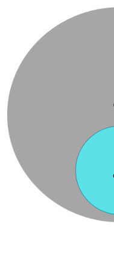
<figcaption class="paper-figure-caption"><b>Fig 1.</b> FIG. 1: An open quantum system with the local system S and environment E.</figcaption>
</figure>
<figure class="paper-figure-card">
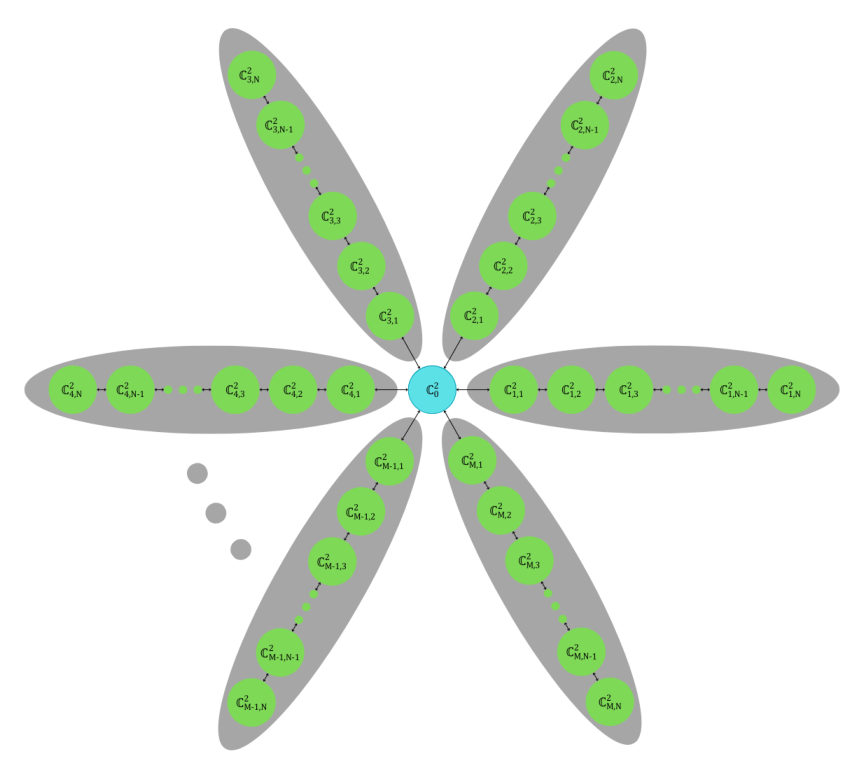
<figcaption class="paper-figure-caption"><b>Fig 2.</b> FIG. 2: A central qubit (blue) interacting with M Ising chains (gray), each consisting of N</figcaption>
</figure>
<figure class="paper-figure-card">

<figcaption class="paper-figure-caption"><b>Fig 3.</b> FIG. 3: A central qubit (blue) interacting with the first qubit of an N qubit Ising chain</figcaption>
</figure>
<figure class="paper-figure-card">

<figcaption class="paper-figure-caption"><b>Fig 4.</b> FIG. 4: Time-evolution of concurrence under varying strength of transverse magnetic field</figcaption>
</figure>
</div>

<p><strong>Summary.</strong> The paper develops a theorem to filter out Hamiltonian terms that do not affect local system dynamics. By testing this theorem on various qubit chain models, the authors demonstrate its predictive power. Crucially, they show that when the underlying commutation relations break down, 'emergent couplings' can generate entanglement between subsystems that never directly interact.</p>
<p><strong>Why it may be interesting.</strong> This work provides powerful theoretical tools for simplifying complex open quantum systems by identifying irrelevant couplings, while simultaneously revealing how non-trivial dynamics (like entanglement) can arise from seemingly 'irrelevant' or non-commuting interactions.</p>
<details>
<summary>Detailed structure</summary>
<p><strong>Main problem.</strong> To establish a rigorous theorem identifying Hamiltonian terms that do not affect local dynamics or observables, and to analyze when this theorem breaks down.</p>
<p><strong>Main result.</strong> The study shows that while certain interactions can be ignored for local dynamics based on commutation relations, non-commuting intermediate interactions can generate entanglement between non-directly coupled subsystems via an emergent coupling mechanism.</p>
<p><strong>Method.</strong> The analysis uses partial tracing over environment degrees of freedom applied to the von Neumann equation, and employs the interaction picture formalism for time evolution calculations.</p>
<p><strong>Model / system.</strong> The models involve qubit chains interacting with a central local system, incorporating Ising interactions, Dzyaloshinskii-Moriya (DM) coupling, and transverse magnetic fields on environment qubits.</p>
<p><strong>Key observables.</strong> Reduced density matrix ($\hat{
ho}_0(t)$), Concurrence ($C(\hat{
ho}_{02})$), and the presence/absence of specific Hamiltonian terms in $\hat{
ho}_0(t)$.</p>
<p><strong>Important parameters / regimes.</strong> Interaction strengths (e.g., $G_{12}$ vs $G_{01}$) and external field strengths ($\omega_1$).</p>
<p><strong>Assumptions / limitations.</strong> The theorem relies on specific commutation relations $[\hat{H}, \hat{H}_{E2}] = 0$; the entanglement analysis assumes initial unbiased probability amplitudes.</p>
<p><strong>Figures summary.</strong> Figure 4 analysis shows that concurrence generation is maximized when the transverse field strength ($\omega_1$) is comparable to the coupling strengths, and vanishes if interactions are too weak or non-commuting terms are absent.</p>
<p><strong>Paper structure.</strong> The paper first introduces a theorem for identifying irrelevant Hamiltonian terms. It then applies this theorem to simple qubit chain models (Ising/DM) where it holds true. Finally, it examines a third system where the commutation relation fails, demonstrating emergent coupling and calculating entanglement using Concurrence.</p>
</details>
<details>
<summary>Abstract</summary>
<p>This study establishes a theorem that provides sufficient criteria for identifying terms in any time-independent Hamiltonian that have no influence on local dynamics, local observables, or any local phenomena, without any approximation. The usefulness of this theorem is demonstrated by predicting the behavior of three systems. The first system consists of multiple qubit chains with Ising interactions. The second system is formed by a single qubit chain, differentiated by the substitution of Dzyalonshinskii-Moriya (DM) interaction for the last Ising interaction. The predictions were verified by analytically deriving the reduced dynamics of both systems. A third system was also considered, namely, a short qubit chain with a transverse magnetic field on the intermediary environment qubit. This transverse magnetic field signals that the commutation relation required by our theorem no longer holds. The third system's local dynamics were also derived analytically, demonstrating that all Hamiltonian constituents contributed to the reduced dynamics. The physical consequences of our theorem's inapplicability were also explored using this third system by analyzing the entanglement dynamics between the qubits that do not directly interact. The results showed that the entanglement is caused by an \textit{emergent coupling} between the two non-directly interacting subsystems. This \textit{emergent coupling} arises from the non-commutativity of the intermediate interactions connecting the two subsystems. When searching for these \textit{emergent couplings}, our theorem can eliminate intermediate interactions that will not produce them.</p>
</details>
<p><sub><a href="#top">↑ back to top</a></sub></p>

<p><a id="paper-2607.00994"></a></p>
<h3 id="exceptional-points-in-dissipative-coupling-polaron-polaritons"><a href="http://arxiv.org/abs/2607.00994v1">Exceptional points in dissipative coupling polaron-polaritons</a></h3>
<p><strong>Authors:</strong> A. J. Vega-Carmona, D. A. Mendoza, A. Camacho-Guardian, M. A. Bastarrachea-Magnani<br>
<strong>Type:</strong> theory · <strong>Category:</strong> other · <strong>PDF:</strong> <a href="https://arxiv.org/pdf/2607.00994v1">https://arxiv.org/pdf/2607.00994v1</a><br>
<strong>Analysis basis:</strong> full PDF text, analyzed in chunks
<strong>Topic relevance:</strong> 🔥 <code>Keldysh / 2PI / non-Gaussian methods</code> <strong>4/5</strong> · 🔥 <code>driven-dissipative phase transition</code> <strong>4/5</strong> · <code>analog quantum simulation</code> <strong>3/5</strong> · <code>correlated / nonlocal dissipation</code> <strong>3/5</strong> · <code>correlated cavity matter</code> <strong>3/5</strong> · <code>methods for driven-dissipative</code> <strong>3/5</strong> · <code>non-equilibrium dynamics</code> <strong>3/5</strong> · <code>Tavis-Cummings &amp; cavity-many-emitter</code> <strong>2/5</strong> · <code>non-equilibrium universality</code> <strong>2/5</strong> · <code>Kondo &amp; dissipative impurity</code> <strong>1/5</strong> · <code>entanglement &amp; information structure</code> <strong>1/5</strong> · <code>interference shaping light</code> <strong>1/5</strong></p>
<div class="figure-strip-hint">↔ Scroll figures horizontally</div>
<div class="paper-figures-scroll">
<figure class="paper-figure-card">
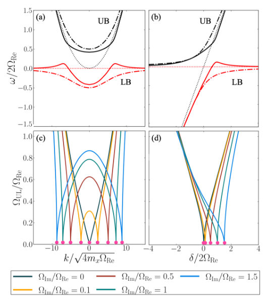
<figcaption class="paper-figure-caption"><b>Fig 1.</b> FIG. 1. Dissipative coupling polariton branches. As a function of (a) momentum at zero detuning and (b) zero- momentum light-matter detuning. The upper branch (UB) and lower branch (UB) are indicated by black and red curves, respectively. Here, ΩIm/ΩRe = 0.9. Below, the condition for the emergence of EPs is shown as a function of dissipative coupling and (c) momentum and (d) detuning for several val- ues of ΩIm/ΩRe whose colors are indicated in the figure. The EPs are indicated with pink dots. We employ γc/2ΩRe = 0.1 and γx/2ΩRe = 0.9.</figcaption>
</figure>
<figure class="paper-figure-card">
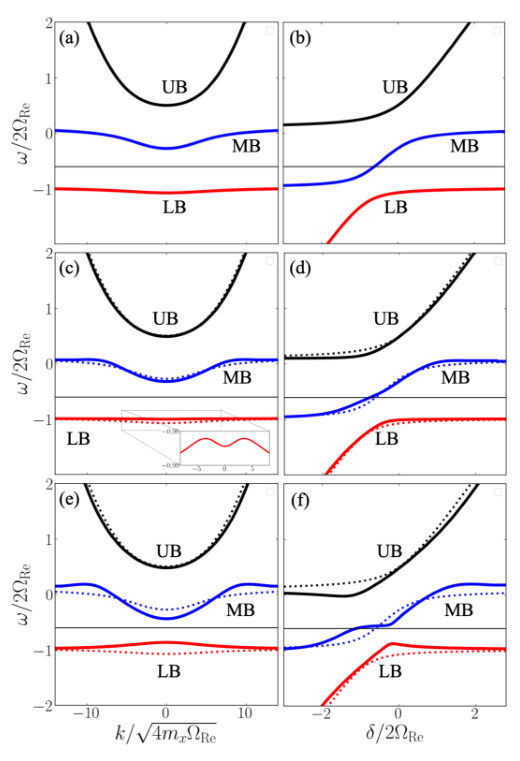
<figcaption class="paper-figure-caption"><b>Fig 2.</b> FIG. 2. Polaron-polaritons as a function of momentum (left) and detuning (right) for increasing values of the dissipative coupling: (a)-(b) ΩIm/ΩRe = 0.1, (c)-(d) ΩIm/ΩRe = 1.0, and (e)-(f) ΩIm/ΩRe = 1.5. In all cases we consider γc/2ΩRe = 0.1, γx/2ΩRe = 0.2, and a BEC density of 4πn↓/mx = 0.5. The dissipative coupling UB, MB, and LB are indicated by black, blue, and red solid lines, respectively. The dotted curves cor- respond to the results in (a) and (b). A black dashed line depicts the biexciton binding energy.</figcaption>
</figure>
<figure class="paper-figure-card">
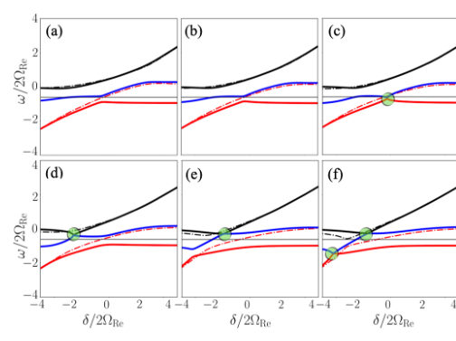
<figcaption class="paper-figure-caption"><b>Fig 3.</b> FIG. 3. Onset of EPs in polaron-polaritons as a function of detuning for zero momentum. The values taken for ∆γ are (a) −0.4, (b) −0.2, (c) 0, (d) 0.3, (e) 0.7, and (f) 0.9. We set ΩIm/ΩRe = 1.6. The color coding is the same as in Fig. 2. EPs are emphasized with green circles.</figcaption>
</figure>
<figure class="paper-figure-card">

<figcaption class="paper-figure-caption"><b>Fig 4.</b> FIG. 4. Polaron polaritons as a function of detuning for a BEC density of 4πn↓/mx = 1.0. We employ γc/2ΩRe = 0.1, γx/2ΩRe = 1.7 and ΩIm/ΩRe = 0.1. The color coding is the same as in Fig. 2.</figcaption>
</figure>
</div>

<p><strong>Summary.</strong> This theoretical study examines polaron-polaritons formed by interacting excitons coupled to light within a semiconductor microcavity. By incorporating dissipative coupling, the authors show that many-body correlations lead to the emergence of exceptional points (EPs) in the energy spectrum. This identifies dissipative polariton systems as a versatile platform for exploring non-Hermitian physics.</p>
<p><strong>Why it may be interesting.</strong> This work is highly relevant as it merges concepts from open quantum systems (dissipation/non-Hermiticity) with many-body physics (exciton interactions), providing a tunable platform for studying non-Hermitian dynamics in AMO and quantum optics contexts.</p>
<details>
<summary>Detailed structure</summary>
<p><strong>Main problem.</strong> The study investigates how combining strong quantum correlations with dissipation shapes collective excitations, specifically focusing on polaron-polaritons.</p>
<p><strong>Main result.</strong> The interplay between many-body correlations and non-Hermitian coupling generates anomalous dispersion relations and the emergence of exceptional points (EPs) in the polaron-polariton spectrum.</p>
<p><strong>Method.</strong> The analysis employs finite-temperature Green's function formalism, solving for the polariton spectrum by finding the zeros of the determinant of the inverse propagator matrix.</p>
<p><strong>Model / system.</strong> The system models exciton-polaritons in a microcavity semiconductor exhibiting strong coupling and biexciton resonance. It involves coupled light-matter interactions ($\hat{H}_{lm}$) and inter-species correlations ($\hat{H}_{int}$).</p>
<p><strong>Key observables.</strong> Exceptional Points (EPs), anomalous dispersion relations, polaron-polariton energy branches (Lower, Middle, Upper), and level attraction.</p>
<p><strong>Important parameters / regimes.</strong> Dissipative coupling strength ($\Omega_{Im}$), relative decay rates ($\gamma_x, \gamma_c$), and the biexciton resonance detuning.</p>
<p><strong>Assumptions / limitations.</strong> The analysis is performed under the Rotating-Wave Approximation (RWA) and assumes a strong coupling regime.</p>
<p><strong>Figures summary.</strong> Figures illustrate dissipative coupling polariton branches showing curvature changes and EPs; other figures map polaron-polaritons vs. momentum/detuning for varying dissipative coupling strength, demonstrating level attraction leading to EP coalescence.</p>
<p><strong>Paper structure.</strong> The paper systematically develops the Hamiltonian, uses Green's functions to incorporate interactions via a self-energy ($\Sigma$), solves the resulting determinant equation to find the spectrum, and analyzes how non-Hermitian terms generate EPs across different polaron-polariton branches.</p>
</details>
<details>
<summary>Abstract</summary>
<p>Understanding how strong correlations and dissipation combine to shape collective quantum excitations is a central challenge in many-body physics. We investigate the effect of dissipative light-matter coupling on strongly interacting exciton-polaritons in the presence of a biexciton resonance, which gives rise to polaron-polariton quasiparticles. We show that the interplay between many-body correlations and non-Hermitian coupling generates anomalous dispersion relations and exceptional points in the polaron-polariton spectrum. The location and coexistence of exceptional points are controlled by the dissipative coupling and the relative decay rates of the excitonic and photonic constituents, allowing them to emerge across different polaron-polariton branches. These results identify dissipative polaron-polaritons as a versatile platform for exploring non-Hermitian many-body physics with tunable light-matter quasiparticles.</p>
</details>
<p><sub><a href="#top">↑ back to top</a></sub></p>

<p><a id="paper-2607.00835"></a></p>
<h3 id="simulating-generic-single-qubit-open-dynamics-via-polarization-frequency-coupling-in-a-photonic-interferometer"><a href="http://arxiv.org/abs/2607.00835v1">Simulating generic single-qubit open-dynamics via polarization-frequency coupling in a photonic interferometer</a></h3>
<p><strong>Authors:</strong> Kalle Raikisto, Alberto Ferrara, Tom Kuusela, Rosario Lo Franco, Jyrki Piilo<br>
<strong>Type:</strong> theory · <strong>Category:</strong> quantum information and computing · <strong>PDF:</strong> <a href="https://arxiv.org/pdf/2607.00835v1">https://arxiv.org/pdf/2607.00835v1</a><br>
<strong>Analysis basis:</strong> full PDF text, analyzed in chunks
<strong>Topic relevance:</strong> 🔥 <code>analog quantum simulation</code> <strong>4/5</strong> · 🔥 <code>correlated / nonlocal dissipation</code> <strong>4/5</strong> · 🔥 <code>interference shaping light</code> <strong>4/5</strong> · <code>methods for driven-dissipative</code> <strong>3/5</strong> · <code>non-equilibrium dynamics</code> <strong>3/5</strong> · <code>quantum optics experiment</code> <strong>3/5</strong> · <code>QC/QI experiment</code> <strong>2/5</strong> · <code>driven-dissipative phase transition</code> <strong>2/5</strong> · <code>Keldysh / 2PI / non-Gaussian methods</code> <strong>1/5</strong> · <code>entanglement &amp; information structure</code> <strong>1/5</strong> · <code>non-equilibrium universality</code> <strong>1/5</strong> · <code>quantum measurements</code> <strong>1/5</strong></p>
<div class="figure-strip-hint">↔ Scroll figures horizontally</div>
<div class="paper-figures-scroll">
<figure class="paper-figure-card">

<figcaption class="paper-figure-caption"><b>Fig 1.</b> FIG. 1. Diagram of the setup. The system is a Mach-Zehnder interferometer consisting of 2 beam splitters (blue), where the photon goes through quartz plate (grey). The initial state is determined by the choice of frequency distribution |g(ω)|2</figcaption>
</figure>
<figure class="paper-figure-card">

<figcaption class="paper-figure-caption"><b>Fig 2.</b> FIG. 2. The diagonal and off-diagonal values of the polarization state for one of the output branch of the interferometer, as a function of the controllable parameters µ, σ, ℓ. The other parameters are set to CH = 0.5, nH = 1.553 and nV = 1.544. Panels (a, b, c): ρ00 as function of µ, σ and ℓrespectively. Panels (d, e, f): |ρ01| as function of µ, σ and ℓrespectively.</figcaption>
</figure>
<figure class="paper-figure-card">

<figcaption class="paper-figure-caption"><b>Fig 3.</b> FIG. 3. Results of the single qubit simulation for the depo- larizing channel, as described in Eq. (13) (a): Comparison of the diagonal element ρ00 (b): Comparison of the off-diagonal coherence (c): Values of the mean frequency µ in the unit of THz. (d): Mean fidelity of the simulation shown as function of the depolarization rate γ. For (a)-(c) the parameters are ℓ= 8.688229·10−12 s, σ = 0.1 THz, nH = 1.553, nV = 1.544, |CH| = 0.527694, γ = 0.1. For (d) parameters ℓ, CH and σ are kept while a new set of µ values is separately optimized each γ.</figcaption>
</figure>
<figure class="paper-figure-card">

<figcaption class="paper-figure-caption"><b>Fig 4.</b> FIG. 4. Results of the single qubit simulation for a non- Markovian dynamics, as described in Eq. (16) (a): Com- parison of the diagonal element ρ00 (b): Comparison of the off-diagonal coherence (c): Values of the mean frequency µ in the unit of THz. (d): Colormap of the mean fidelity as a function of γ and λ. For (a)-(c) the parameters are ℓ= 0.101579 · 10−12 s, σ = 0.637 THz, nH = 1.553, nV = 1.544, |CH| = 0.3, γ = 4, λ = 0.05. For (d) pa- rameters ℓ, CH and σ are kept while a new set of µ values is separately optimized each γ, λ.</figcaption>
</figure>
<figure class="paper-figure-card">
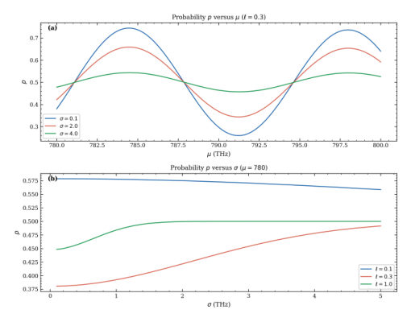
<figcaption class="paper-figure-caption"><b>Fig 5.</b> FIG. 5. Probability of finding the photon in the output branch A as (a): function of µ and (b): a function of σ.</figcaption>
</figure>
</div>

<p><strong>Summary.</strong> The authors propose using a photonic interferometer with birefringent quartz to simulate arbitrary single-qubit open dynamics. By treating the photon's frequency as an effective environment, they derive a controllable mechanism that allows simulating non-Markovian and general decoherence processes. This establishes polarization-frequency engineered interferometers as a versatile tool for quantum simulation.</p>
<p><strong>Why it may be interesting.</strong> This work provides a concrete, experimentally accessible optical protocol—'optical reservoir engineering'—to simulate complex quantum dissipation channels beyond simple Markovian decay.</p>
<details>
<summary>Detailed structure</summary>
<p><strong>Main problem.</strong> The goal is to simulate arbitrary single-qubit open-system dynamics using a controllable photonic platform.</p>
<p><strong>Main result.</strong> The setup successfully simulates general qubit decoherence, including non-Markovian effects like coherence revivals, by engineering the coupling between polarization and frequency degrees of freedom.</p>
<p><strong>Method.</strong> The simulation involves analyzing the partial trace over the continuous frequency environment degree of freedom after a photon passes through a birefringent quartz plate within an interferometer.</p>
<p><strong>Model / system.</strong> The physical system is a single photon in an open Mach-Zehnder interferometer containing a birefringent quartz plate. The qubit dynamics are governed by coupling polarization (the system) to the frequency spectrum (the environment).</p>
<p><strong>Key observables.</strong> Reduced density matrix elements ($
ho_{00}, 
ho_{01}$), mean fidelity, and output photon probabilities ($p_j$).</p>
<p><strong>Important parameters / regimes.</strong> Frequency distribution parameters ($\mu, \sigma$), quartz plate thickness ($\ell$), initial populations, and relative phase ($\phi$).</p>
<p><strong>Assumptions / limitations.</strong> The frequency environment is modeled using a Gaussian distribution, and the analysis relies on partial tracing over this continuous spectrum.</p>
<p><strong>Figures summary.</strong> Figures illustrate the setup (MZI with quartz), show probability distributions vs. $\mu$ or $\sigma$, and compare simulated qubit evolution (e.g., amplitude damping) against theoretical benchmarks like depolarization channels.</p>
<p><strong>Paper structure.</strong> The paper details the derivation of the output state by tracing out frequency, derives measurable quantities ($\eta_\lambda, \kappa_A$), and then applies this formalism to benchmark simulations for various open dynamics regimes (depolarizing, non-Markovian).</p>
</details>
<details>
<summary>Abstract</summary>
<p>We propose a photonic platform for simulating arbitrary single-qubit open-system dynamics using a single photon in an open Mach-Zehnder interferometer. A birefringent quartz plate induces a coupling between the polarization and frequency degrees of freedom. By treating the latter as an effective environment, we analytically derive the reduced polarization dynamics. We show that the resulting evolution is characterized by a controllable interplay between populations and coherence, instead of the usual dephasing caused by quartz plates. By adjusting the photon frequency distribution and interferometric parameters, we demonstrate that target single-qubit states can be efficiently reproduced through a tunable optical protocol expected to work under accessible experimental conditions. The simulator is benchmarked against paradigmatic open-system evolutions, including depolarization and non-Markovian dynamics, achieving high accuracy. Our results establish polarization-frequency engineered photonic interferometers as a versatile protocol for simulation of open quantum systems.</p>
</details>
<p><sub><a href="#top">↑ back to top</a></sub></p>

<p><a id="paper-2607.00086"></a></p>
<h3 id="dissipation-splits-the-mott-transition-in-one-dimension"><a href="http://arxiv.org/abs/2607.00086v1">Dissipation splits the Mott transition in one dimension</a></h3>
<p><strong>Authors:</strong> Oscar Bouverot-Dupuis, Alberto Rosso, Laura Foini<br>
<strong>Type:</strong> theory · <strong>Category:</strong> strongly correlated electrons · <strong>PDF:</strong> <a href="https://arxiv.org/pdf/2607.00086v1">https://arxiv.org/pdf/2607.00086v1</a><br>
<strong>Analysis basis:</strong> full PDF text, analyzed in chunks
<strong>Topic relevance:</strong> 🔥 <code>analog quantum simulation</code> <strong>4/5</strong> · 🔥 <code>driven-dissipative phase transition</code> <strong>4/5</strong> · <code>Frenkel-Kontorova</code> <strong>3/5</strong> · <code>correlated / nonlocal dissipation</code> <strong>3/5</strong> · <code>methods for driven-dissipative</code> <strong>3/5</strong> · <code>non-equilibrium universality</code> <strong>3/5</strong> · <code>Kondo &amp; dissipative impurity</code> <strong>2/5</strong> · <code>non-equilibrium dynamics</code> <strong>2/5</strong> · <code>Keldysh / 2PI / non-Gaussian methods</code> <strong>1/5</strong> · <code>entanglement &amp; information structure</code> <strong>1/5</strong></p>
<div class="figure-strip-hint">↔ Scroll figures horizontally</div>
<div class="paper-figures-scroll">
<figure class="paper-figure-card">

<figcaption class="paper-figure-caption"><b>Fig 1.</b> Figure 1. Schematic representation of the dissipative sys- tem. A one-dimensional fermionic chain (top), or equiv- alently an XXZ spin chain (bottom), is coupled to inde- pendent local baths characterized by the low-frequency spectral function J(ω) ≃α|ω|s.</figcaption>
</figure>
<figure class="paper-figure-card">
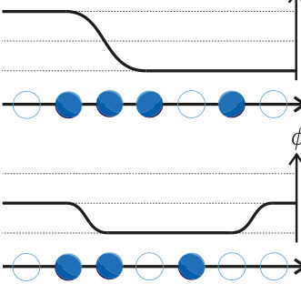
<figcaption class="paper-figure-caption"><b>Fig 2.</b> Figure 2. Bosonized representation of density excita- tions. A particle added on top of the half-filled state ρ0 = 1/2 corresponds to a kink of amplitude −π in the bosonic field (top). The half-filled background also sup- ports elementary domain walls carrying half the particle charge, represented by kinks of amplitude ±π/2 (bot- tom).</figcaption>
</figure>
<figure class="paper-figure-card">
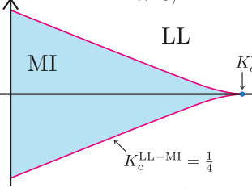
<figcaption class="paper-figure-caption"><b>Fig 3.</b> Figure 3. Phase diagrams for s &lt; 1 (top), 1 &lt; s &lt; 3/2 (middle) and s &gt; 3/2 (bottom). The blue transition lines and the tip of the lobe belong to the BKT universality class. The magenta lines are second order commensurate- incommensurate transitions with exponents depending on the bath exponent s.</figcaption>
</figure>
<figure class="paper-figure-card">

<figcaption class="paper-figure-caption"><b>Fig 4.</b> Figure 4. Typical field configurations ϕ(x, τ) on a lattice of size 256 × 256. The colourmap encodes the value of the field ϕ with darker blue signifying higher values of ϕ. Each kink has an amplitude π/2. We have highlighted one kink for each of the three rightmost plots. From left to right : a) is the MI with no kinks, b) is the DP for s = 1.25 with 6 kinks, c) is the LL with 6 kinks, d) is the LL with 20 kinks. The parameters are K = 0.35, u = 1, g = 0, α = 0.5 and s = 1.25 for a), b) and s = 1.75 for c), d). The data were obtained by working in the canonical ensemble (fixed number of kinks), so the chemical potential µ is not specified.</figcaption>
</figure>
<figure class="paper-figure-card">
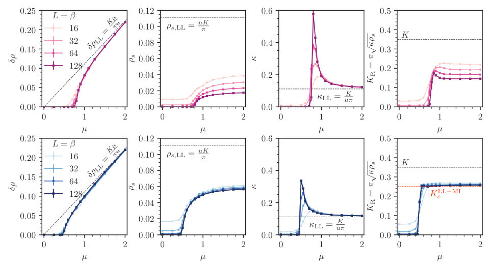
<figcaption class="paper-figure-caption"><b>Fig 5.</b> Figure 5. C/IC transitions at s = 1.25 (top) and s = 1.75 (bottom) for increasing L = β. Top: MI to DP transition. The MI is at µ &lt; µc ≃0.8, while the DP is at µ &gt; µc. Bottom: MI to LL transition. The MI is at µ &lt; µc ≃0.5, while the LL is at µ &gt; µc. From left to right: doping δρ, superfluid stiffness ρs, compressibility κ and renormalised Luttinger parameter KR. In all plots, only µ is varied and K = 0.35, u = 1, g = 0, α = 0.5. The black dashed lines correspond to the values δρLL, ρsLL, κLL, K of a pure LL (K = 0.35, u = 1, g = α = 0). The red dashed line in the lower right plot is at KLL−MI c = 1/4. Error bars are shown and often smaller than the marker size.</figcaption>
</figure>
</div>

<p><strong>Summary.</strong> The paper analyzes the Mott transition in 1D fermionic chains coupled to dissipative baths. It demonstrates that dissipation fundamentally alters the phase diagram, splitting the single transition into two distinct critical points: an LL-to-Dissipative Phase (DP) BKT transition, followed by a DP-to-MI transition. This shows that environmental coupling can generate novel critical behavior in strongly correlated matter.</p>
<p><strong>Why it may be interesting.</strong> This work provides a detailed theoretical framework for understanding how environmental coupling (dissipation) can qualitatively change fundamental quantum phase transitions in low-dimensional strongly correlated systems, which is highly relevant to experimental realizations in cold atoms or superconducting circuits.</p>
<details>
<summary>Detailed structure</summary>
<p><strong>Main problem.</strong> The study investigates how coupling a one-dimensional Mott transition system to local dissipative baths fundamentally alters the nature of the quantum phase transition.</p>
<p><strong>Main result.</strong> Dissipation splits the conventional Mott transition into two distinct critical phenomena: an LL $  o$ DP BKT transition, followed by a new DP $    o$ MI commensurate-incommensurate transition for bath exponents $s < 3/2$.</p>
<p><strong>Method.</strong> The analysis combines bosonization techniques with exact integration of bath degrees of freedom to derive an effective field theory and analyze the resulting critical behavior using Renormalization Group (RG) methods.</p>
<p><strong>Model / system.</strong> The system is a one-dimensional interacting fermionic model exhibiting a Mott transition between a Luttinger liquid (LL) and a Mott insulator (MI), with dissipation introduced via coupling to local harmonic oscillator baths.</p>
<p><strong>Key observables.</strong> Compressibility ($\kappa$), superfluid stiffness ($
ho_s$), critical exponents ($eta, 
u, z$), and the DC conductivity $\sigma(\omega)$.</p>
<p><strong>Important parameters / regimes.</strong> The bath exponent $s$ (characterizing the bath spectrum $J(\omega) \sim |\omega|^s$) is crucial, with thresholds at $s=1$ and $s=3/2$.</p>
<p><strong>Assumptions / limitations.</strong> The analysis relies on bosonization, exact integration of the bath degrees of freedom, and perturbative RG techniques applied to the effective action.</p>
<p><strong>Figures summary.</strong> Figures schematically illustrate the phase diagram showing LL $    o$ DP $ o$ MI for $s < 3/2$, contrasting with direct LL $  o$ MI for $s > 3/2$.</p>
<p><strong>Paper structure.</strong> The paper proceeds by establishing the effective action via bosonization and bath integration, then analyzing the resulting critical points using RG flow equations to determine how the transition splits into two distinct universality classes.</p>
</details>
<details>
<summary>Abstract</summary>
<p>Understanding how dissipation modifies quantum phase transitions is a central challenge in many-body physics. A paradigmatic example is the one-dimensional Mott transition, which in isolated systems separates a conducting Luttinger liquid (LL) from a Mott insulator (MI). Here, we study the fate of this transition in the presence of dissipative baths locally coupled to the density. Using bosonisation and an exact integration of the bath degrees of freedom, we show that dissipation fundamentally reshapes the phase diagram for bath exponents $s<3/2$, where $s$ characterises the low-energy bath spectrum. Rather than undergoing a direct LL-MI transition, the system develops an intermediate dissipative phase (DP) that is compressible and gapless, yet has zero superfluid stiffness. As a result, the conventional Mott transition splits into two distinct critical phenomena: a Berezinskii-Kosterlitz-Thouless transition from the LL to the DP, followed by a new commensurate-incommensurate transition from the DP to the MI. We derive an effective field theory for the latter transition and characterize its universality. For $1<s<3/2$, the critical exponents vary continuously with the bath exponent as $β=ν=1/z=s-1$, while for $s<1$ the transition is governed by $β=ν=1/z=0$ and the doping vanishes sharper than any power law. State-of-the-art Monte Carlo simulations quantitatively support our predictions. These results demonstrate that dissipation can qualitatively alter the nature of the Mott transition and generate novel critical behaviour in strongly correlated one-dimensional systems.</p>
</details>
<p><sub><a href="#top">↑ back to top</a></sub></p>

<p><a id="paper-2607.00602"></a></p>
<h3 id="robustness-of-quantum-discord-in-nonequilibrium-electronic-transport-through-tunnel-coupled-quantum-dots"><a href="http://arxiv.org/abs/2607.00602v1">Robustness of Quantum Discord in Nonequilibrium Electronic Transport through Tunnel-Coupled Quantum Dots</a></h3>
<p><strong>Authors:</strong> Thingujam Yaiphalemba Meitei, Saikumar Krithivasan, Md. Manirul Ali, Arijit Sen<br>
<strong>Type:</strong> theory · <strong>Category:</strong> statistical mechanics · <strong>PDF:</strong> <a href="https://arxiv.org/pdf/2607.00602v1">https://arxiv.org/pdf/2607.00602v1</a><br>
<strong>Analysis basis:</strong> full PDF text, analyzed in chunks
<strong>Topic relevance:</strong> 🔥 <code>entanglement &amp; information structure</code> <strong>4/5</strong> · 🔥 <code>methods for driven-dissipative</code> <strong>4/5</strong> · 🔥 <code>non-equilibrium dynamics</code> <strong>4/5</strong> · <code>Keldysh / 2PI / non-Gaussian methods</code> <strong>3/5</strong> · <code>driven-dissipative phase transition</code> <strong>3/5</strong> · <code>correlated / nonlocal dissipation</code> <strong>2/5</strong> · <code>non-equilibrium universality</code> <strong>2/5</strong> · <code>Kondo &amp; dissipative impurity</code> <strong>1/5</strong> · <code>analog quantum simulation</code> <strong>1/5</strong> · <code>scars &amp; prethermalization</code> <strong>1/5</strong></p>
<div class="figure-strip-hint">↔ Scroll figures horizontally</div>
<div class="paper-figures-scroll">
<figure class="paper-figure-card">
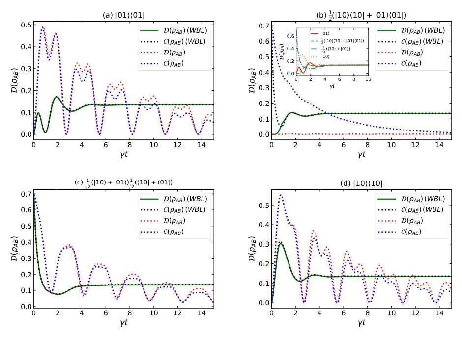
<figcaption class="paper-figure-caption"><b>Fig 1.</b> Figure 1: Time evolution of quantum discord D(ρAB) and classical correlation C(ρAB) for the full non-Markovian dynamics (red and black dotted, Γ = γ, W = γ) and the wideband limit (WBL, green solid, Γ = γ, W = 50γ) for four initial states: (a) |01⟩⟨01|, (b) 1</figcaption>
</figure>
<figure class="paper-figure-card">

<figcaption class="paper-figure-caption"><b>Fig 2.</b> Fig. 1 compares the time evolution of quantum discord D(ρAB) and classical correlation C(ρAB) in the full non- Markovian dynamics (Γ = γ, W = γ) and the wideband limit (WBL, Γ = γ, W = 50γ) across four initial states: the product states |01⟩⟨01| and |10⟩⟨10|, the superposition state 1 √</figcaption>
</figure>
<figure class="paper-figure-card">

<figcaption class="paper-figure-caption"><b>Fig 3.</b> Figure 2: Time evolution of quantum discord D(ρAB) in a tunnel-coupled DQD system connected to fermionic reservoirs: (a) variation with system–reservoir coupling strength ΓL = ΓR for fixed spectral bandwidth WL = WR = W = γ, and (b) variation with spectral bandwidth WL = WR for fixed coupling strength ΓL = ΓR = Γ = 0.5γ.</figcaption>
</figure>
<figure class="paper-figure-card">
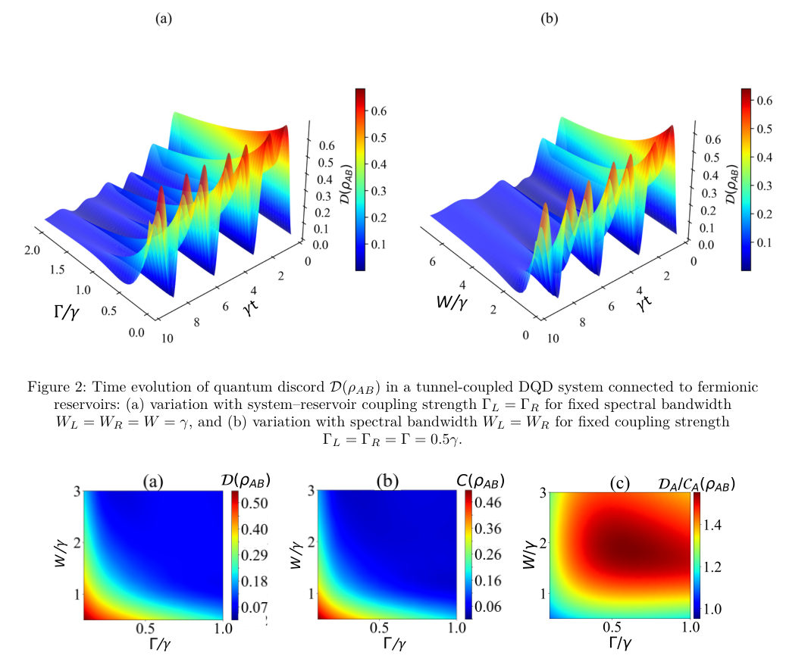
<figcaption class="paper-figure-caption"><b>Fig 4.</b> Figure 3: Steady-state: (a) quantum discord D(ρAB), (b) classical correlation C(ρAB) and (c) Steady-state ratio D(ρAB)/C(ρAB) as functions of coupling strength Γ and spectral bandwidth W for symmetric coupling ΓL = ΓR ≡Γ and WL = WR ≡W.</figcaption>
</figure>
<figure class="paper-figure-card">

<figcaption class="paper-figure-caption"><b>Fig 5.</b> Fig. 3(c) shows the ratio D(ρAB)/C(ρAB) across the same parameter space. As far as the |01⟩initial state is concerned, the ratio exceeds unity everywhere, confirming that quantum discord always equals or exceeds classical correlation regardless of coupling strength or bandwidth. In the weak-coupling, narrow-bandwidth corner, the ratio approaches ∼1.0, indicating that both types of correlations are of comparable magnitude. As Γ and W increase, the ratio rises monotonically toward ∼1.4–1.5, reflecting the faster decay of classical correlations relative to discord established in Fig. 3(a) and (b), and upon further increase in both parameters, the ratio begins to decrease. This monotonic...</figcaption>
</figure>
</div>

<p><strong>Summary.</strong> The paper analyzes the robustness of quantum correlations, specifically Quantum Discord, in a double quantum dot system driven by external biases. Using advanced theoretical techniques like the Quantum Langevin equation, the authors show that discord persists robustly in the non-equilibrium steady state. This establishes that environmental coupling and asymmetry can be engineered to control and maintain nonclassical quantum features in solid-state devices.</p>
<p><strong>Why it may be interesting.</strong> This work directly addresses open quantum systems and non-equilibrium thermodynamics, which are central to modern AMO physics and mesoscopic quantum transport studies, providing quantitative tools (Discord) beyond simple entanglement measures.</p>
<details>
<summary>Detailed structure</summary>
<p><strong>Main problem.</strong> The study investigates how quantum correlations, specifically Quantum Discord, behave during non-equilibrium electronic transport processes.</p>
<p><strong>Main result.</strong> Quantum discord remains finite in the steady state over a broad parameter range, demonstrating that nonequilibrium transport provides an effective means of controlling nonclassical correlations.</p>
<p><strong>Method.</strong> The analysis employs the Quantum Langevin Equation formalism to derive the exact reduced density matrix, allowing for the calculation of time-dependent and steady-state quantum and classical correlations.</p>
<p><strong>Model / system.</strong> The system is a Double Quantum Dot (DQD) coupled to fermionic reservoirs (Left and Right), modeled by a total Hamiltonian including system, bath, and interaction terms. The analysis covers transient dynamics under thermal bias.</p>
<p><strong>Key observables.</strong> Quantum Discord ($D(
ho_{AB})$), Classical Correlation ($C(
ho_{AB})$), Total Mutual Information ($I(
ho_{AB})$), and their ratio $D/C$.</p>
<p><strong>Important parameters / regimes.</strong> System-reservoir coupling strength ($\Gamma$), spectral bandwidth ($W_\alpha$), thermal bias ($\Delta T$), and reservoir asymmetry.</p>
<p><strong>Assumptions / limitations.</strong> The formalism uses the quantum Langevin equation to retain non-Markovian memory effects, avoiding Markovian approximations. The calculation of classical correlation relies on projective measurements on one subsystem.</p>
<p><strong>Figures summary.</strong> Figures illustrate time evolution (transient dynamics) showing convergence to a steady state, and steady-state dependence on coupling strength, bandwidth, and thermal bias, highlighting the role of asymmetry.</p>
<p><strong>Paper structure.</strong> The paper systematically analyzes the non-equilibrium dynamics by first establishing the theoretical framework using Langevin equations. It then examines how initial states affect transient behavior before focusing on the robust, parameter-dependent steady-state values for quantum discord versus classical correlation.</p>
</details>
<details>
<summary>Abstract</summary>
<p>Quantum discord captures quantum correlations beyond entanglement and can remain finite even when the entanglement vanishes. We investigate the transient nonequilibrium dynamics and steady-state behavior of quantum discord and classical correlations in a double quantum dot (DQD) system coupled to fermionic reservoirs. By employing a quantum Langevin equation formalism, we obtain the exact reduced density matrix of the system, enabling a comprehensive analysis of its quantum and classical correlations under nonequilibrium conditions. The influence of system-reservoir coupling strength, spectral bandwidth, thermal bias, and varying initial state on both the transient dynamics and steady-state correlations is systematically analyzed. Quantum discord remains finite in the nonequilibrium steady state over a broad parameter range. Although thermal gradients reduce the overall magnitude of correlations, quantum discord persists and exhibits greater resilience. These results demonstrate that nonequilibrium electronic transport, together with the environmental spectral properties and reservoir asymmetry, provides an effective means of controlling nonclassical correlations in mesoscopic systems and establishes quantum discord as a robust hallmark of open fermionic quantum devices.</p>
</details>
<p><sub><a href="#top">↑ back to top</a></sub></p>

<p><a id="paper-2607.00235"></a></p>
<h3 id="learning-low-energy-subspace-overlaps-in-many-body-systems-with-measurement-based-and-coherent-quantum-strategies"><a href="http://arxiv.org/abs/2607.00235v1">Learning Low-Energy Subspace Overlaps in Many-Body Systems with Measurement-Based and Coherent Quantum Strategies</a></h3>
<p><strong>Authors:</strong> Shamminuj Aktar, Rishabh Bhardwaj, Tanmoy Bhattacharya, Stephan Eidenbenz<br>
<strong>Type:</strong> both · <strong>Category:</strong> other · <strong>PDF:</strong> <a href="https://arxiv.org/pdf/2607.00235v1">https://arxiv.org/pdf/2607.00235v1</a><br>
<strong>Analysis basis:</strong> full PDF text, analyzed in chunks
<strong>Topic relevance:</strong> 🔥 <code>non-equilibrium dynamics</code> <strong>4/5</strong> · <code>entanglement &amp; information structure</code> <strong>3/5</strong> · <code>methods for driven-dissipative</code> <strong>3/5</strong> · <code>non-equilibrium universality</code> <strong>3/5</strong> · <code>quantum measurements</code> <strong>3/5</strong> · <code>measurement-induced transitions</code> <strong>2/5</strong> · <code>scars &amp; prethermalization</code> <strong>2/5</strong> · <code>analog quantum simulation</code> <strong>1/5</strong> · <code>driven-dissipative phase transition</code> <strong>1/5</strong> · <code>exotic spin models in light-matter</code> <strong>1/5</strong></p>
<div class="figure-strip-hint">↔ Scroll figures horizontally</div>
<div class="paper-figures-scroll">
<figure class="paper-figure-card">
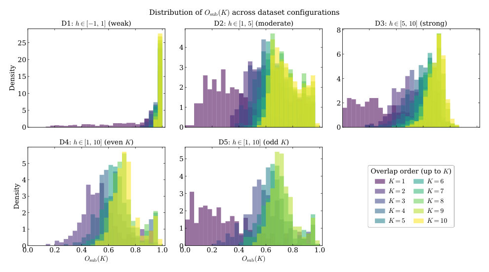
<figcaption class="paper-figure-caption"><b>Fig 1.</b> FIG. 1: Distributions of OK across the five dataset configurations. Overlaps concentrate near unity in the weak- quench regime (D1) and spread toward lower values as the quench strength increases (D2, D3). Datasets D4 and D5 share the same quench range as D2–D3 but restrict the target overlap orders to even and odd values of K, respectively.</figcaption>
</figure>
<figure class="paper-figure-card">
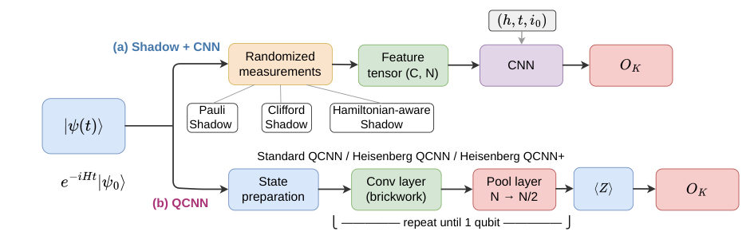
<figcaption class="paper-figure-caption"><b>Fig 2.</b> FIG. 2: High-level comparison of the two quantum information extraction strategies. The input state |ψ(t)⟩= e−iHt |ψ0⟩is the time-evolved ground state of H0 under the post-quench Hamiltonian H. (a) Measurement-based pipeline: one of three randomized measurement protocols (Pauli, Clifford, or Pauli on Hamiltonian-aware pre-rotation H0-rot) produces a feature tensor of shape (C, N), which is processed by a 1D CNN together with normalized scalar inputs (h, t, i0). (b) Coherent pipeline: the statevector is loaded via arbitrary state preparation, processed through alternating brickwork convolutional and pooling layers that halve the active qubits at each stage, and the final ⟨Z⟩is mapped to the...</figcaption>
</figure>
<figure class="paper-figure-card">

<figcaption class="paper-figure-caption"><b>Fig 3.</b> FIG. 3: Shadow measurement protocols. (a) Pauli shadow: random single-qubit Pauli rotations yield 3N local expecta- tion features via median-of-means (8 groups, 500 shots). (b) Two-qubit Clifford shadow: random 2Q Clifford circuits in alternating brickwork pairing yield 6N features including nearest-neighbor correlators (8 groups, 1,000 shots). (c) Hamiltonian-aware shadow: e−iτH0 pre-rotation consisting of nearest-neighbor Ising exchange gates (XX, Y Y , ZZ) and single-qubit Z rotations representing the longitudinal field hz P</figcaption>
</figure>
<figure class="paper-figure-card">
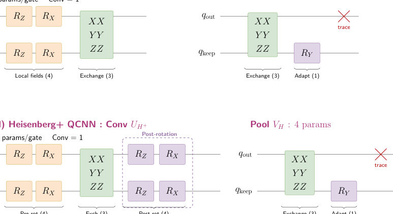
<figcaption class="paper-figure-caption"><b>Fig 4.</b> FIG. 4: Convolutional and pooling gate structures for the four QCNN variants. (a) Standard Simple: Rot + CNOT (6 params) with CRZ+CRY+CRX pooling (3 params). (b) Standard Deep: same gate applied twice per block. (c) Heisenberg QCNN: local rotations (RZ, RX) followed by Ising exchange (XX, Y Y , ZZ) mirroring H0 (7 params), with exchange-based pooling and RY (4 params). (d) Heisenberg QCNN+: adds post-rotation for enhanced express- ibility (11 params); same pooling as (c).</figcaption>
</figure>
<figure class="paper-figure-card">
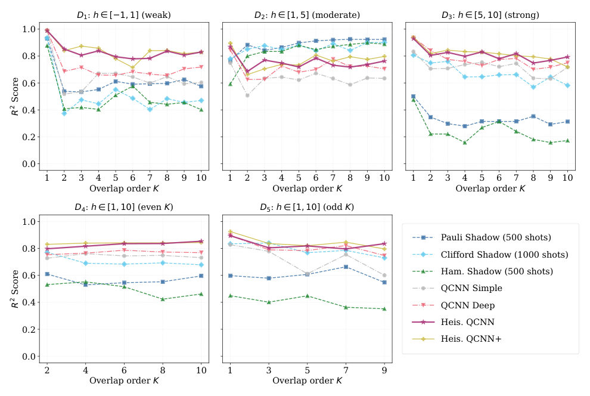
<figcaption class="paper-figure-caption"><b>Fig 5.</b> FIG. 5: Test-set R2 as a function of cumulative overlap order K for all seven models across the five dataset configura- tions at the measurement budgets listed in Table II. Each panel shows one dataset: D1 (weak quench), D2 (moderate quench), D3 (strong quench), D4 (full range, even K), and D5 (full range, odd K). Values show mean R2 averaged over three independent runs. Both measurement-based and coherent strategies successfully learn subspace overlaps, but relative performance depends strongly on the quench regime. Supplementary Table IV gives the corresponding R2 values averaged over all K.</figcaption>
</figure>
</div>

<p><strong>Summary.</strong> The paper investigates predicting how much a time-evolved quantum state remains in its low-energy manifold after a quench in a Heisenberg spin chain. It compares measurement-based shadow learning against coherent Quantum CNNs, finding that no single method is universally superior; the best approach depends critically on whether the system dynamics are weakly, moderately, or strongly perturbed.</p>
<p><strong>Why it may be interesting.</strong> This work directly addresses how to extract complex, non-local many-body information (like subspace purity) from quantum measurements using machine learning techniques, providing crucial insights into the limitations of current quantum characterization methods for dynamics.</p>
<details>
<summary>Detailed structure</summary>
<p><strong>Main problem.</strong> The core problem is the supervised prediction of subspace overlaps ($\mathcal{O}_K$) between time-evolved quantum states and specified low-energy eigenspaces following a local quench.</p>
<p><strong>Main result.</strong> The optimal learning strategy for predicting these overlaps is highly dependent on the quench regime: physics-informed QCNNs are robust, while measurement-based shadow methods excel in moderate quench regimes but fail in weak/strong quenches.</p>
<p><strong>Method.</strong> The study compares two quantum information extraction strategies—measurement-based (using classical CNNs on randomized measurements) and coherent quantum learning (using Quantum Convolutional Neural Networks)—to learn the overlap observable.</p>
<p><strong>Model / system.</strong> The system is a 10-qubit one-dimensional Heisenberg spin chain, whose dynamics are studied after being subjected to a local perturbation (quench). The Hamiltonian governs the time evolution $|\psi(t)
angle = e^{-iHt} |\psi_0
angle$.</p>
<p><strong>Key observables.</strong> The primary observable is the subspace overlap $\mathcal{O}_K$, quantified by the coefficient of determination ($R^2$) when predicting it from quantum measurements.</p>
<p><strong>Important parameters / regimes.</strong> Quench strength ($h$), which defines five dataset configurations (D1-D5) spanning weak, moderate, and strong quench regimes; measurement shot budgets ($ ext{Shots}$).</p>
<p><strong>Assumptions / limitations.</strong> The dominant limitation observed during hardware validation is the resource cost and noise associated with arbitrary state preparation circuits.</p>
<p><strong>Figures summary.</strong> Figures illustrate distributions of $\mathcal{O}_K$ across different quench strengths, compare $R^2$ scores between shadow CNNs and QCNNs across regimes, and show predicted vs. true overlaps for various models.</p>
<p><strong>Paper structure.</strong> The paper introduces the problem setup (Heisenberg chain, subspace overlap), details two competing learning paradigms (Shadow vs. QCNN), presents results showing regime-dependent performance trade-offs, validates findings on noisy hardware, and concludes with a comparison of resource costs.</p>
</details>
<details>
<summary>Abstract</summary>
<p>Predicting the overlap of quantum states with specified low-energy subspaces is a key diagnostic for quantum many-body dynamics, with direct applications in state preparation, subspace-based algorithms, and the study of thermalization. We study the supervised prediction of subspace overlaps O_K between time-evolved states and K-dimensional low-energy eigenspaces of a 10-qubit Heisenberg spin chain following a local perturbation. We compare two quantum information extraction strategies: measurement-based learning, in which classical shadow features are processed by convolutional neural networks, and coherent quantum learning, in which quantum convolutional neural networks process the state directly. We further introduce physics-informed variants for both approaches, including Hamiltonian-aware shadows and QCNN gates aligned with the Heisenberg exchange structure. Across five dataset configurations spanning weak, moderate, and strong quench regimes, physics-informed QCNNs achieve stable performance, with mean test-set coefficients of determination R^2 = 0.753-0.846. Shadow-based methods show stronger regime dependence: they outperform QCNNs in the moderate-quench regime, reaching R^2 = 0.886, but underperform in weak and strong quenches at default shot budgets, where the best shadow results are R^2 = 0.615 and 0.672, respectively. Hardware validation on Quantinuum and IBM noise models shows that arbitrary state preparation is the dominant limitation, requiring approximately 2,044 two-qubit gates and causing near-complete depolarization before inference. These results identify a regime-dependent tradeoff between measurement-based and coherent quantum learning, with shadow methods excelling when the target remains locally accessible and physics-informed QCNNs providing more robust performance across dynamical regimes.</p>
</details>
<p><sub><a href="#top">↑ back to top</a></sub></p>

<p><a id="paper-2607.01146"></a></p>
<h3 id="strange-luttinger-liquids-in-a-cavity-embedded-one-dimensional-electronic-chain"><a href="http://arxiv.org/abs/2607.01146v1">Strange Luttinger liquids in a cavity-embedded one-dimensional electronic chain</a></h3>
<p><strong>Authors:</strong> Danh-Phuong Nguyen, Christophe Mora, Cristiano Ciuti<br>
<strong>Type:</strong> theory · <strong>Category:</strong> strongly correlated electrons · <strong>PDF:</strong> <a href="https://arxiv.org/pdf/2607.01146v1">https://arxiv.org/pdf/2607.01146v1</a><br>
<strong>Analysis basis:</strong> full PDF text, analyzed in chunks
<strong>Topic relevance:</strong> 🔥 <code>analog quantum simulation</code> <strong>4/5</strong> · 🔥 <code>correlated cavity matter</code> <strong>4/5</strong> · <code>Tavis-Cummings &amp; cavity-many-emitter</code> <strong>2/5</strong> · <code>driven-dissipative phase transition</code> <strong>2/5</strong> · <code>methods for driven-dissipative</code> <strong>2/5</strong> · <code>Frenkel-Kontorova</code> <strong>1/5</strong> · <code>Keldysh / 2PI / non-Gaussian methods</code> <strong>1/5</strong> · <code>Kondo &amp; dissipative impurity</code> <strong>1/5</strong> · <code>correlated / nonlocal dissipation</code> <strong>1/5</strong> · <code>entanglement &amp; information structure</code> <strong>1/5</strong> · <code>exotic spin models in light-matter</code> <strong>1/5</strong> · <code>non-equilibrium dynamics</code> <strong>1/5</strong> · <code>non-equilibrium universality</code> <strong>1/5</strong></p>
<div class="figure-strip-hint">↔ Scroll figures horizontally</div>
<div class="paper-figures-scroll">
<figure class="paper-figure-card">
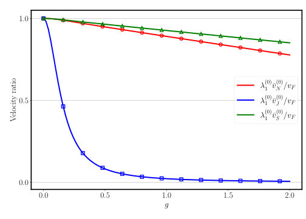
<figcaption class="paper-figure-caption"><b>Fig 1.</b> FIG. 1. Characteristic velocities of the strange Luttinger liq- uid, normalized by the Fermi velocity, as functions of the cavity coupling g. Solid lines indicate values obtained from Eq. (13), while open symbols correspond to exact velocities calculated directly from the tight-binding model given by Eq. (5). The sound velocity of the collective excitations is given by ¯v(0) S , while ¯v(0) N and ¯v(0) J characterize the propagation ve- locities of density and current fluctuations, respectively. The parameter λ(0) 1 quantifies the cavity-induced band squeezing. Other parameters: N = 500, Ne/N = 1/4, ωc/t = 10.</figcaption>
</figure>
<figure class="paper-figure-card">

<figcaption class="paper-figure-caption"><b>Fig 2.</b> FIG. 2. Top panel: Real part of the correlation function G(0, τ). Bottom panel: Real part of G(x, 0). G(x, τ) mea- sures the propagation of a fermionic excitation between the spacetime points (0, 0) and (x, τ). Both functions are calcu- lated without (g = 0) and with (g = 2.0) light-matter in- teraction. Inset in both panels display the maxima of the correlation functions on a logarithmic scale, with slope α(g). Other parameters: N = 500, Ne/N = 1/2, ωc/t = 10.</figcaption>
</figure>
<figure class="paper-figure-card">

<figcaption class="paper-figure-caption"><b>Fig 3.</b> FIG. 3. Electronic phase diagram at half-filling, plotted as a function of U/t and g for N = 12, ωc/t = 10. Left panel shows χ2 for LL-PS transition, while right panel shows χ1 for LL-CDW transition. In both panels, the cross markers indicate the numerical maxima, while the green dashed lines represent extrapolated results.</figcaption>
</figure>
<figure class="paper-figure-card">
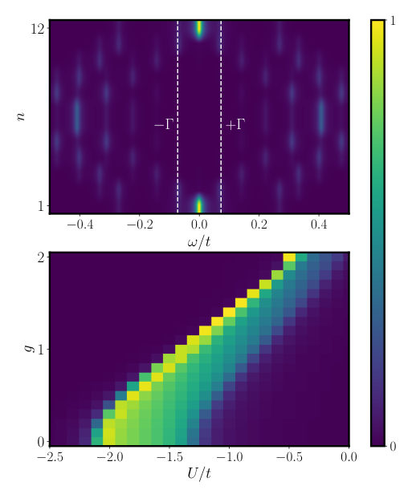
<figcaption class="paper-figure-caption"><b>Fig 4.</b> FIG. 4. Top: Local density of states An(ω) at half-filling for U/t = −2 in the absence of light-matter coupling. Bottom: Edge spectral weight W(U, g) at half-filling as a function of U/t and g. Other parameters: N = 12, ωc/t = 10, Γ = 0.3× level spacing πt/N. The spectral functions are shown in arbi- trary units, and are normalized to their respective maxima.</figcaption>
</figure>
</div>

<p><strong>Summary.</strong> This paper theoretically analyzes a one-dimensional electronic chain coupled to an optical cavity field and subject to electron interactions. It establishes that the light-matter coupling fundamentally alters the low-energy physics, leading to a 'strange Luttinger liquid' description. The authors map out phase diagrams showing how this cavity interaction modifies known quantum phases, including those hosting Majorana-like zero modes.</p>
<p><strong>Why it may be interesting.</strong> This work is highly relevant as it merges concepts from quantum optics (cavity QED) with strongly correlated electron physics (Luttinger liquids), providing a mechanism to engineer unconventional quantum states in 1D systems.</p>
<details>
<summary>Detailed structure</summary>
<p><strong>Main problem.</strong> The study investigates the low-energy physics of a one-dimensional electronic chain coupled to a quantized vacuum field, aiming to characterize deviations from standard Luttinger liquid theory.</p>
<p><strong>Main result.</strong> The coupling to the cavity field creates a 'strange Luttinger liquid' in the non-interacting limit, breaking conventional velocity relations; furthermore, electron-electron interactions lead to a phase diagram featuring Majorana-like zero modes whose boundaries are shifted by the cavity field.</p>
<p><strong>Method.</strong> The analysis employs bosonization techniques for low-energy effective descriptions and utilizes exact diagonalization (ED) for finite interaction strengths to map out quantum phase diagrams.</p>
<p><strong>Model / system.</strong> The system is a tight-binding electronic chain embedded in an optical cavity, described by a Hamiltonian incorporating light-matter coupling via the Peierls substitution and electron-electron interactions ($U$).</p>
<p><strong>Key observables.</strong> Low-energy excitation spectrum, local density of states (LDOS), charge susceptibilities ($\chi$), and dressed bosonic velocities ($    ilde{v}_S,  ilde{v}_N,  ilde{v}_J$).</p>
<p><strong>Important parameters / regimes.</strong> Interaction strength ($U$), light-matter coupling strength ($g$), cavity frequency ($\omega_c$), and filling level (half-filling).</p>
<p><strong>Assumptions / limitations.</strong> The analysis relies on deriving low-energy effective Hamiltonians via perturbation theory in the coupling $g$ and assuming a large but finite chain length.</p>
<p><strong>Figures summary.</strong> Figures illustrate electronic phase diagrams showing transitions between Luttinger liquid, Charge Density Wave (CDW), and Phase Separation (PS) phases as functions of interaction strength and cavity coupling.</p>
<p><strong>Paper structure.</strong> The paper progresses by first analyzing the non-interacting case ($U=0$) to establish the 'strange' nature of the LL. It then extends this analysis using ED for finite $U$, mapping out phase diagrams, and finally investigating how interactions modify the low-energy description derived from cavity coupling.</p>
</details>
<details>
<summary>Abstract</summary>
<p>We study a one-dimensional electronic chain coupled to a homogeneous quantized vacuum field and electron-electron interactions. In the absence of the latter, we derive a low-energy effective description in the presence of light-matter coupling, which we identify as a strange Luttinger liquid. Although it retains a formal resemblance to conventional Luttinger liquid theory, the coupling to the quantum field qualitatively modifies the low-energy sector and breaks the standard velocity relation underlying Luttinger universality. For finite electron-electron interactions, we recover a phase diagram featuring several phases as a function of interaction strength and hopping amplitude, including a phase hosting Majorana-like zero modes. Using exact diagonalization, we compute observables that characterize the phase boundaries and show that the cavity field significantly shifts them. We also study the fate of Majorana-like states under the influence of the cavity field, highlighting their modification by light-matter coupling. Finally, we investigate whether the strange Luttinger liquid description identified in the noninteracting regime continues to hold when electron-electron interactions are introduced.</p>
</details>
<p><sub><a href="#top">↑ back to top</a></sub></p>

<p><a id="paper-2607.00381"></a></p>
<h3 id="subsystem-thermalization-and-work-statistical-characterizations-of-floquet-dynamics"><a href="http://arxiv.org/abs/2607.00381v1">Subsystem Thermalization and Work Statistical Characterizations of Floquet Dynamics</a></h3>
<p><strong>Authors:</strong> Feng-Li Lin, Ching-Yu Huang<br>
<strong>Type:</strong> theory · <strong>Category:</strong> statistical mechanics · <strong>PDF:</strong> <a href="https://arxiv.org/pdf/2607.00381v1">https://arxiv.org/pdf/2607.00381v1</a><br>
<strong>Analysis basis:</strong> full PDF text, analyzed in chunks
<strong>Topic relevance:</strong> 🔥 <code>non-equilibrium dynamics</code> <strong>4/5</strong> · 🔥 <code>scars &amp; prethermalization</code> <strong>4/5</strong> · <code>driven-dissipative phase transition</code> <strong>3/5</strong> · <code>methods for driven-dissipative</code> <strong>3/5</strong> · <code>entanglement &amp; information structure</code> <strong>2/5</strong> · <code>non-equilibrium universality</code> <strong>2/5</strong> · <code>Frenkel-Kontorova</code> <strong>1/5</strong> · <code>Keldysh / 2PI / non-Gaussian methods</code> <strong>1/5</strong> · <code>analog quantum simulation</code> <strong>1/5</strong> · <code>correlated / nonlocal dissipation</code> <strong>1/5</strong></p>
<div class="figure-strip-hint">↔ Scroll figures horizontally</div>
<div class="paper-figures-scroll">
<figure class="paper-figure-card">

<figcaption class="paper-figure-caption"><b>Fig 1.</b> FIG. 1. (a) Schematic illustration of the periodically driven Hamilto- nian. Within one driving period T, the system alternates between two non-commuting parts, HJ and Hx, in a piecewise-constant (bang–bang) manner. (b) Stroboscopic evolution of the quantum state under the Floquet operator UF . Starting from the initial state ρ0, the state after n driving cycles is given by ρn, where each appli- cation of UF corresponds to one full driving period 2π/ω.</figcaption>
</figure>
<figure class="paper-figure-card">
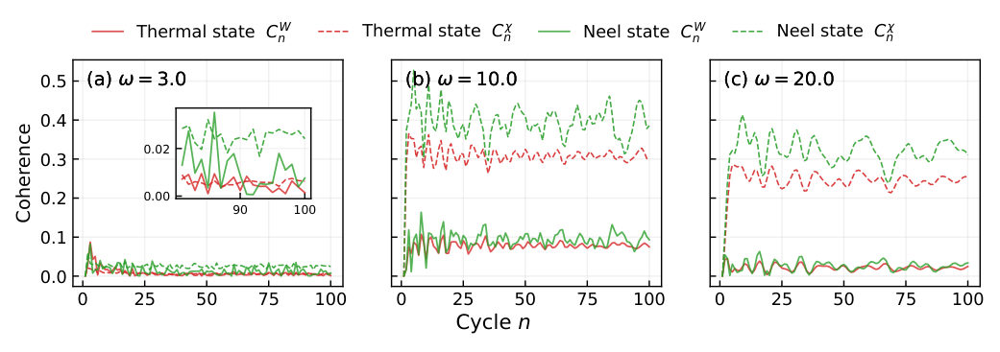
<figcaption class="paper-figure-caption"><b>Fig 2.</b> FIG. 2. Stroboscopic evolution of the coherence-related quantities CW n (solid lines) and Cχ n (dashed lines) for characterizing the quantum coherence of Floquet dynamics by work statistics from the initial state ρ0 which is either a thermal state ρβ=1 (red) or a N´eel state (green). for three driving frequencies, ω = 3.0, 10.0, 20.0. The inset figure in the subfigure (a) shows the zoom-in pattern in the regime 80 ≤n ≤100. For this figure and the ones presented later, the initial states are always prepared with respect to the spin chain Hamiltonian HJ + Hx of N = 10 sites with fixed parameters J = 1, hx = 0.7, and hz = 1.0.</figcaption>
</figure>
<figure class="paper-figure-card">
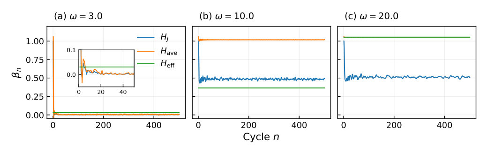
<figcaption class="paper-figure-caption"><b>Fig 3.</b> FIG. 3. Stroboscopic evolution of the effective inverse temperature βn defined by (7) by choosing H0 = HJ (blue), Have (orange) and Heff (green) with three driving frequencies ω = 3.0, 10.0, 20.0 as shown in the respective subfigures (a), (b), (c) from an initial thermal state of unit inverse temperature, ρ0 = ρβ=1. The result is briefly summarized as follows. In the subfigure (a), βn≫1 approaches zero for HJ and Have, but not for Heff as shown in the zoomed inset figure. In the subfigure (b), the βn≫1’s for the three Hamiltonians are different. In the subfigure (c), Have and Heff yield the same βn≫1, which is slightly larger than β0 = 1 but is larger than the βn≫1 from HJ.</figcaption>
</figure>
<figure class="paper-figure-card">
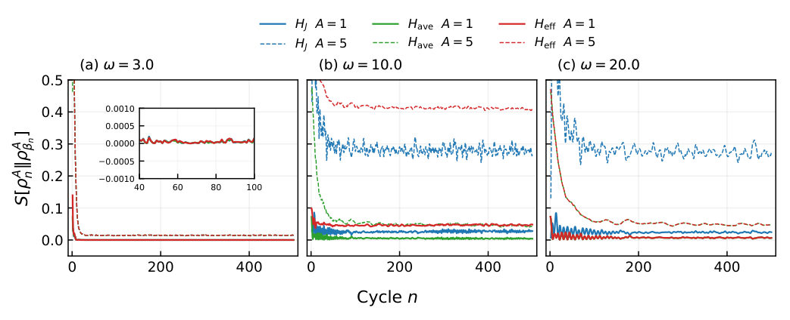
<figcaption class="paper-figure-caption"><b>Fig 4.</b> FIG. 4. Comparison of stroboscopic behaviors of relative entropy S  ρA n ρA βn  in characterizing subsystem Floquet thermalization for the βn given in Fig. 3 for H0 = HJ (blue), Have (green) and Heff (red) from a initial thermal state ρ0 = ρβ=1. We again consider three driving frequencies (a) (ω = 3.0), (b) (ω = 10.0), and (c) (ω = 20.0) with two different subsystem sizes A = 1 (solid lines) and A = 5 (dashed lines). At low frequency (ω = 3.0), the relative entropy approaches almost vanishing values for both A = 1 and A = 5 for all three choices of H0. It implies that the subsystem Floquet thermalization works well up to A = 5. At the intermediate and high frequencies (ω = 10.0, 20.0),...</figcaption>
</figure>
<figure class="paper-figure-card">
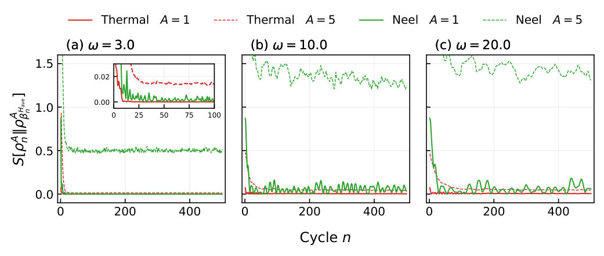
<figcaption class="paper-figure-caption"><b>Fig 5.</b> FIG. 5. Stroboscopic evolution of relative entropy S  ρA n ρA βn  for characterizing the subsystem thermalization of Floquet dynamics for three driving frequencies ω = 3.0, 10.0, 20.0 from an initial state which is either a thermal state ρβ=1 (red) or a N´eel state (green) for two different subsystem sizes A = 1 (solid lines) and A = 5 (dashed lines). Here, we choose H0 = Have to determine βn by (7). The inset figure in the subfigure (a) shows the zoom-in pattern in the regime 0 ≤n ≤100. The relative entropies approach nearly-vanishing values steadily in all cases when the initial state is ρβ=1, implying almost-global thermalization rather than just subsystem thermalization. On the other...</figcaption>
</figure>
</div>

<p><strong>Summary.</strong> The paper develops a comprehensive diagnostic toolkit to study how periodically driven quantum systems approach thermal equilibrium. By comparing local subsystem equilibration (via relative entropy) with global energy absorption statistics (via work theorems), the authors show that these two distinct measures reveal the same underlying dynamical crossover, providing a unified picture of non-equilibrium physics.</p>
<p><strong>Why it may be interesting.</strong> This work provides a powerful, quantitative methodology for analyzing non-equilibrium steady states in driven quantum matter, directly relevant to understanding energy flow and thermalization processes beyond standard equilibrium assumptions.</p>
<details>
<summary>Detailed structure</summary>
<p><strong>Main problem.</strong> The study aims to characterize Floquet thermalization in periodically driven quantum systems by combining two complementary diagnostics: local subsystem equilibration and global work statistics.</p>
<p><strong>Main result.</strong> The authors demonstrate that both local (subsystem) and global (work statistics) indicators track the same dynamical crossover—from prethermal plateaus towards eventual heating—establishing a unified framework for characterizing non-equilibrium dynamics.</p>
<p><strong>Method.</strong> The analysis employs theoretical tools including calculating relative entropy for subsystem thermalization and analyzing work distributions via characteristic functions and fluctuation theorems for global energy absorption.</p>
<p><strong>Model / system.</strong> The system modeled is an N-site open Ising spin chain subjected to periodic driving (Floquet dynamics). The Hamiltonian involves interaction ($H_J$) and a time-dependent driving term ($H_x$).</p>
<p><strong>Key observables.</strong> Subsystem relative entropy $S(
ho_A || 
ho_A^eta)$, Work Distribution Function $P_{	ext{TPM}}^n(W)$, Fluctuation Theorem deviation $  ext{CFT}_n$, and the effective inverse temperature $eta_n$.</p>
<p><strong>Important parameters / regimes.</strong> Driving frequency ($\omega$), subsystem size ($A$), and the choice of reference Hamiltonian ($H_J, H_{	ext{eff}}, H_{	ext{ave}}$).</p>
<p><strong>Assumptions / limitations.</strong> The comparison relies on identifying a consistent ansatz thermal state $
ho_{eta n}$ using one of the derived effective Hamiltonians, which is shown to be most robustly provided by $H_{ave}$.</p>
<p><strong>Figures summary.</strong> Figures illustrate the stroboscopic evolution of coherence quantities and relative entropy across different driving frequencies ($\omega=3.0, 10.0, 20.0$), comparing results for initial thermal vs. pure states.</p>
<p><strong>Paper structure.</strong> The paper systematically introduces the physical model and diagnostics (subsystem/work statistics), compares their behavior across varying driving frequencies to map out dynamical regimes (prethermalization, heating), and concludes by establishing a unified theoretical framework connecting local and global equilibration measures.</p>
</details>
<details>
<summary>Abstract</summary>
<p>We study Floquet thermalization in a periodically driven quantum non-integrable Ising chain by combining two operational diagnostics: subsystem thermalization and work statistics. For generic interacting Floquet systems, stroboscopic dynamics lead to heating toward an infinite-temperature state at low driving frequencies, to a prethermal state during the crossover regime, and then to a finite-temperature state at high driving frequencies. We show that reduced density matrices of small subsystems provide a precise measure of local equilibration and clearly resolve prethermal plateaus. In parallel, we analyze the statistics of work performed over a Floquet cycle using both the characteristic function of work with and without the two-point measurements, and the related fluctuation theorem, which captures coherent contributions and deviations from thermal equilibrium. By comparing these two diagnostics within the same Floquet setting, we demonstrate that work statistics encode the same dynamical crossover that governs subsystem thermalization. Our results establish a unified and experimentally accessible framework for characterizing Floquet thermalization, prethermal regimes, and coherent energy absorption in interacting quantum systems.</p>
</details>
<p><sub><a href="#top">↑ back to top</a></sub></p>

<p><a id="paper-2607.00513"></a></p>
<h3 id="surface-charges-in-a-rydberg-atom-nanowaveguide-hybrid-quantum-system"><a href="http://arxiv.org/abs/2607.00513v1">Surface charges in a Rydberg atom-nanowaveguide hybrid quantum system</a></h3>
<p><strong>Authors:</strong> Aswathy Raj, Anna Kortel, Krishna Jadeja, Dylan J. Brown, Alexey Vylegzhanin, Robert Löw, Síle Nic Chormaic<br>
<strong>Type:</strong> experiment · <strong>Category:</strong> other · <strong>PDF:</strong> <a href="https://arxiv.org/pdf/2607.00513v1">https://arxiv.org/pdf/2607.00513v1</a><br>
<strong>Analysis basis:</strong> full PDF text, analyzed in chunks
<strong>Topic relevance:</strong> 🔥 <code>Rydberg arrays</code> <strong>4/5</strong> · <code>methods for driven-dissipative</code> <strong>3/5</strong> · <code>quantum optics experiment</code> <strong>3/5</strong> · <code>QC/QI experiment</code> <strong>2/5</strong> · <code>quantum measurements</code> <strong>2/5</strong> · <code>Keldysh / 2PI / non-Gaussian methods</code> <strong>1/5</strong> · <code>Tavis-Cummings &amp; cavity-many-emitter</code> <strong>1/5</strong> · <code>analog quantum simulation</code> <strong>1/5</strong> · <code>correlated / nonlocal dissipation</code> <strong>1/5</strong> · <code>correlated cavity matter</code> <strong>1/5</strong> · <code>driven-dissipative phase transition</code> <strong>1/5</strong> · <code>non-equilibrium dynamics</code> <strong>1/5</strong></p>
<div class="figure-strip-hint">↔ Scroll figures horizontally</div>
<div class="paper-figures-scroll">
<figure class="paper-figure-card">

<figcaption class="paper-figure-caption"><b>Fig 1.</b> FIG. 1. (a) Schematic of the experimental setup. The polariza- tion control (PC) consists of two quarter-wave plates. The beams are combined using dichroic mirrors (DM). The cloud of atoms is aligned with the waist of the ONF and its fluorescence is monitored by a PMT and an EMCCD. (b) Diagram of the Rydberg excitation scheme, with detunings ∆780 and ∆480. (c) Numerical simulation of the ONF-based dipole trap potential, showing attractive (red) and repulsive (blue) potentials, and the total potential (black) includ- ing atom-surface interactions (van der Waals and Casimir-Polder) (green). The trap position is 406 nm away from the fiber surface and the trap depth is 0.17 mK. (d) Sample MOT...</figcaption>
</figure>
<figure class="paper-figure-card">
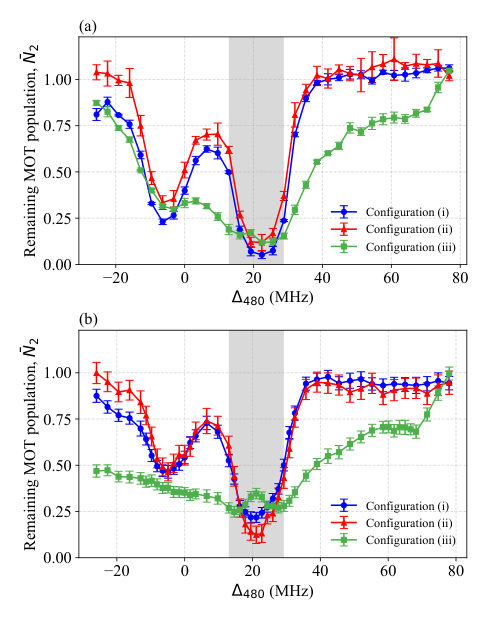
<figcaption class="paper-figure-caption"><b>Fig 2.</b> FIG. 2. Rydberg excitation spectra for 35D5/2 for three trapping beam configurations in the ONF: (i) a unidirectional 762 nm beam (blue curve), (ii) counterpropagating beams of 1064 nm (red curve), and (iii) the combination of both wavelengths (green curve). For each configuration, the corresponding beams were left on during the measurement. (a) Initial spectrum for each beam configuration. (b) Spectra after the system was exposed to continuous 480 nm light, tuned to ∆480 = +20 MHz for 30 minutes with the MOT on. In both (a) and (b) each data point corresponds to 4 seconds of 480 nm exposure, averaged over 4 measurements .</figcaption>
</figure>
<figure class="paper-figure-card">
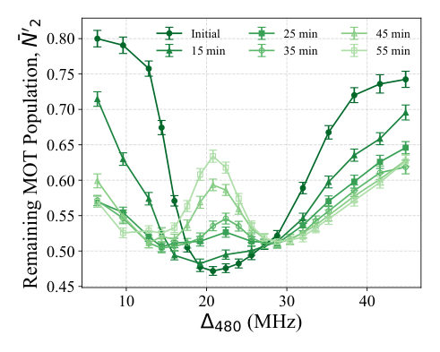
<figcaption class="paper-figure-caption"><b>Fig 3.</b> FIG. 3. Time evolution of the Rydberg excitation spectrum for 35D5/2 for config. (iii) with 480 nm light continuously on. The legend gives the cumulative 480 nm exposure time, beginning from when the 480 nm light was initially switched on. Each data point corresponds to 5 seconds of 480 nm exposure and averaged over the 5 second PMT signal.</figcaption>
</figure>
<figure class="paper-figure-card">

<figcaption class="paper-figure-caption"><b>Fig 4.</b> FIG. 4. Rydberg excitation spectrum for 40D5/2 for config. (iii). Ini- tial spectrum (dark green) and spectrum after 15 minutes of 480 nm exposure (light green) (a) with and (b) without the applied AC field. Each data point corresponds to 4 seconds of 480 nm exposure, aver- aged over 4 measurements</figcaption>
</figure>
<figure class="paper-figure-card">
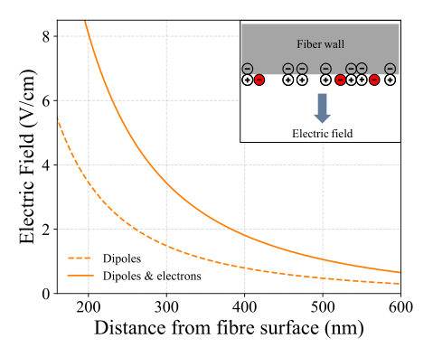
<figcaption class="paper-figure-caption"><b>Fig 5.</b> FIG. 6. Electric field as a function of the distance from the ONF sur- face, with an estimate of 5 × 105 dipoles (dashed) plus 65 electrons (solid) stuck on the fiber. Inset: Schematic illustrating the radial DC electric field originating from dipoles (transparent circles) of Rb atoms adsorbed on the fiber surface. Red circles depict the random distribution of electrons on the ONF surface.</figcaption>
</figure>
</div>

<p><strong>Summary.</strong> The authors experimentally investigate how surface charge accumulation on an optical nanofiber degrades the excitation of Rydberg atoms in a hybrid quantum system. They demonstrate that spectral splitting is caused by DC electric fields from these charges, which are generated via enhanced collisional ionization. The results provide crucial guidelines for designing and operating robust fiber-integrated quantum devices.</p>
<p><strong>Why it may be interesting.</strong> This work is highly relevant as it addresses a critical practical limitation—surface noise—in scaling up integrated quantum technologies utilizing Rydberg atoms near solid-state waveguides. It provides quantitative methods to characterize and mitigate environmental decoherence sources.</p>
<details>
<summary>Detailed structure</summary>
<p><strong>Main problem.</strong> The study investigates how uncontrolled surface electric fields, arising from charge accumulation on dielectric nanostructures, degrade Rydberg excitation processes in hybrid quantum systems.</p>
<p><strong>Main result.</strong> Spectral deformations and splitting observed in the Rydberg excitation spectrum are strongly attributed to DC energy level shifts caused by accumulated surface charges. Applying an external oscillating electric field can suppress these spectral features.</p>
<p><strong>Method.</strong> The research combines experimental measurements of time-dependent Rydberg spectra with theoretical modeling using master equations incorporating static electric field shifts.</p>
<p><strong>Model / system.</strong> The system involves laser-cooled $^{87}	ext{Rb}$ atoms excited to high-lying Rydberg states near an optical nanofiber (ONF). The model incorporates DC energy level shifts ($\delta_{DC}$) derived from surface charges, which are generated primarily through enhanced Rydberg-ground state collisional ionization.</p>
<p><strong>Key observables.</strong> Time evolution of the Rydberg excitation spectrum; spectral splitting/deformation magnitude; remaining MOT population ($N_2$).</p>
<p><strong>Important parameters / regimes.</strong> Rydberg states (e.g., $35D_{5/2}, 40D_{5/2}$); electric field strengths ($\sim 1-2.5 	ext{ V/cm}$); collisional ionization rate ($\Gamma_{	ext{coll}}$).</p>
<p><strong>Assumptions / limitations.</strong> The primary assumption is that the observed spectral changes are due to static DC shifts from surface charges, which can be mitigated by external AC fields.</p>
<p><strong>Figures summary.</strong> Figures illustrate schematic setups, time evolution of spectra showing deformation (Figs. 2, 3), comparison with model predictions based on field strength (Fig. 5), and the dependence of spectral features on laser polarization alignment (Figs. 11, 12).</p>
<p><strong>Paper structure.</strong> The paper progresses from establishing the physical platform and observing time-dependent spectral changes to modeling these shifts using DC electric fields derived from charge generation mechanisms like collisional ionization, culminating in guidelines for mitigation.</p>
</details>
<details>
<summary>Abstract</summary>
<p>Hybrid quantum platforms based on highly excited Rydberg atoms coupled to nanophotonics devices offer a promising route toward scalable quantum networks and integrated quantum technologies. However, the close proximity of Rydberg atoms to dielectric nanostructures makes these systems particularly susceptible to uncontrolled surface electric fields that can lead to a degradation of the excitation process. Here, we experimentally investigate Rydberg excitation of laser-cooled $^{87}$Rb atoms via the evanescent field of an optical nanofiber in the presence of fiber-guided red- and blue-detuned light fields as used to trap ground state atoms in fiber-based dipole traps. We observe a time evolution of the Rydberg excitation spectrum when both the dipole trapping fields are on and the additional spectral features that appear can be suppressed by applying an external oscillating electric field to the system, strongly indicating that surface charge accumulation is responsible for the observed spectral feature. The experimental results are reproduced qualitatively by a model that incorporates DC energy level shifts arising from electric fields generated by charges deposited on the nanofiber surface. We identify Rydberg-ground state collisional ionization, which is enhanced by the dipole trapping fields, as the dominant mechanism for charge generation. These results provide new insight into charge dynamics at dielectric nanophotonic interfaces and establish practical guidelines for mitigating surface charge-induced electric fields in fiber-integrated Rydberg quantum systems.</p>
</details>
<p><sub><a href="#top">↑ back to top</a></sub></p>

<p><a id="paper-2607.01231"></a></p>
<h3 id="brownian-ratchets-and-pumps-universally-simulate-many-body-active-dynamics"><a href="http://arxiv.org/abs/2607.01231v1">Brownian ratchets and pumps universally simulate many-body active dynamics</a></h3>
<p><strong>Authors:</strong> Charles Stahl, Ethan Lake, Vedika Khemani<br>
<strong>Type:</strong> theory · <strong>Category:</strong> statistical mechanics · <strong>PDF:</strong> <a href="https://arxiv.org/pdf/2607.01231v1">https://arxiv.org/pdf/2607.01231v1</a><br>
<strong>Analysis basis:</strong> full PDF text, analyzed in chunks
<strong>Topic relevance:</strong> 🔥 <code>non-equilibrium dynamics</code> <strong>4/5</strong> · 🔥 <code>non-equilibrium universality</code> <strong>4/5</strong> · <code>driven-dissipative phase transition</code> <strong>3/5</strong> · <code>methods for driven-dissipative</code> <strong>3/5</strong> · <code>analog quantum simulation</code> <strong>2/5</strong> · <code>Keldysh / 2PI / non-Gaussian methods</code> <strong>1/5</strong> · <code>correlated / nonlocal dissipation</code> <strong>1/5</strong> · <code>entanglement &amp; information structure</code> <strong>1/5</strong> · <code>exotic spin models in light-matter</code> <strong>1/5</strong></p>
<div class="figure-strip-hint">↔ Scroll figures horizontally</div>
<div class="paper-figures-scroll">
<figure class="paper-figure-card">
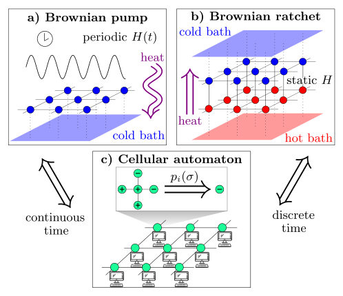
<figcaption class="paper-figure-caption"><b>Fig 1.</b> FIG. 1. We prove that (a) time-dependent systems with dis- sipation (pumps) and (b) systems coupled to baths at different temperatures (ratchets) can simulate (c) cellular automaton dynamics, in continuous and discrete time, respectively.</figcaption>
</figure>
<figure class="paper-figure-card">
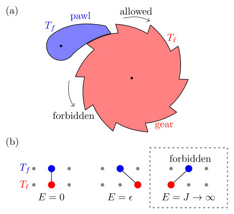
<figcaption class="paper-figure-caption"><b>Fig 2.</b> FIG. 2. (a) A Brownian ratchet. If the gear is hotter than the pawl, then Brownian motion will apply random forces clockwise and counterclockwise, but the pawl will preferen- tially allow the gear to rotate clockwise. The result will is clockwise motion. (b) A Brownian ratchet on a lattice. In the limit Tf ≪ϵ ≪Tℓthe leader spin (bottom) can either be on the same site or one ahead of the follower spin (top), but the follower spin always wants to be on the same site as the leader.</figcaption>
</figure>
<figure class="paper-figure-card">

<figcaption class="paper-figure-caption"><b>Fig 3.</b> FIG. 3. Arrangement and coupling of leader and follower spins in the Brownian pump for biased diffusion. Blue disks represent the positions of the particles in an instantaneous ground state. In H1, the follower spins are all coupled to each other, and the leader spins are coupled individually such that xℓ= xf + 1. In H2, the leader spins are all coupled to each other, and the follower spins are coupled individually such that the ground state is xf = xℓ.</figcaption>
</figure>
<figure class="paper-figure-card">

<figcaption class="paper-figure-caption"><b>Fig 4.</b> FIG. 4. Sketch of the phase diagram of the ferromagnetic Toom ratchet as a function of the strength h of a symmetry- breaking field, the temperature difference δT between layers, and the follower temperature Tf. An equilibrium Ising model is not stable to any symmetry-breaking field, leading to a paramagnetic phase at all nonzero values of h when δT = 0 as shown by the blue line. However, when we raise δT, the ferromagnetic phase (shaded in blue) extends to nonzero h. The upper limit to the ferromagnetic phase in the Tf, δT plane are set by the energy scales in the Hamiltonian.</figcaption>
</figure>
<figure class="paper-figure-card">

<figcaption class="paper-figure-caption"><b>Fig 5.</b> FIG. 5. Three different representations of the Toom ratchet. Leader spins are red (for hot) and follower spins are blue (for cold). (a) Two square lattices stacked on top of each other, with heat flowing between the layers. (b) The couplings of a single leader spin, with solid lines for strength J and dashed lines for strength K. Dotted lines are only a guide to the eye. (c) An overhead view emphasizes that the two layers can be reinterpreted as two sublattices at different temperatures.</figcaption>
</figure>
</div>

<p><strong>Summary.</strong> The paper establishes that any local active dynamics can be simulated using either a time-periodic Hamiltonian (Brownian pump) or a static Hamiltonian coupled to two baths at different temperatures (Brownian ratchet). This demonstrates that steady heat currents are sufficient resources to generate and stabilize complex, non-equilibrium collective behaviors in many-body spin systems.</p>
<p><strong>Why it may be interesting.</strong> This work provides a powerful theoretical framework showing how non-equilibrium thermodynamics—specifically steady heat currents—can serve as the fundamental physical resource to power complex computation or collective behavior, bridging statistical mechanics with information processing.</p>
<details>
<summary>Detailed structure</summary>
<p><strong>Main problem.</strong> To demonstrate that two simple, physically realizable driving mechanisms—the Brownian pump (time-periodic) and the Brownian ratchet (static)—can universally simulate any local active dynamics found in spin systems.</p>
<p><strong>Main result.</strong> The authors prove rigorous theorems showing that both pumps and ratchets can approximate arbitrary probabilistic cellular automata (PCA) dynamics, translating abstract rule-based updates into concrete thermodynamic driving protocols.</p>
<p><strong>Method.</strong> The work involves constructing specific Hamiltonians for the pump and ratchet mechanisms and analyzing their time evolution in various parameter limits to show equivalence with PCA update rules.</p>
<p><strong>Model / system.</strong> The models are based on many-body spin systems, specifically using probabilistic cellular automata (PCAs) as the target dynamics. The physical realization involves coupling spins to thermal baths at different temperatures or applying time-periodic driving fields.</p>
<p><strong>Key observables.</strong> Magnetization ($\langle m 
angle$), steady heat current, apparent critical field ($h_c$), and simulation closeness ($\delta$).</p>
<p><strong>Important parameters / regimes.</strong> Temperature difference ($\delta T = T_\ell - T_f$), coupling strengths ($J, K$), time-period $ au$, and bath temperatures ($T_\ell, T_f$).</p>
<p><strong>Assumptions / limitations.</strong> The constructions are robust up to noise that can be made arbitrarily weak by tuning energy scales; the analysis often relies on specific limits of parameters (e.g., $\Gamma_f \gg \Gamma_\ell$ or $1 \ll 	au \ll e^{eta J}$).</p>
<p><strong>Figures summary.</strong> Figures illustrate comparisons between time-dependent pumping, static ratcheting, and cellular automaton dynamics; phase diagrams show ferromagnetic stability regions dependent on temperature differences and external fields.</p>
<p><strong>Paper structure.</strong> The paper builds from analyzing simple biased diffusion to constructing the full many-body ratchet/pump Hamiltonian. It then proves theorems for simulating continuous-time (ratchet) and discrete-time (pump) PCAs, culminating in tests of memory retention using symmetry-breaking fields.</p>
</details>
<details>
<summary>Abstract</summary>
<p>Active systems can exhibit a broad range of phenomena forbidden in equilibrium. Their dynamics are often specified by abstract local update rules, and it is generally unclear when the same behavior can arise from physically natural driving. Here we show that two simple driving mechanisms can universally simulate any local active dynamics in spin systems. The first is the familiar setting of a time-periodic Hamiltonian coupled to a cold bath, which we call a "many-body Brownian pump." As a second mechanism, we promote the Brownian ratchet, traditionally a mechanism for transport, to a "many-body Brownian ratchet": a static Hamiltonian coupled to a hot bath and a cold bath, where the resulting steady heat current can be harnessed not only to drive transport but also to generate local active dynamics. Using probabilistic cellular automata as an explicit model, we prove that for any continuous-time (or discrete-time) local active dynamics, there is always a many-body Brownian ratchet (or pump) that approximates the dynamics, up to noise that can be made arbitrarily weak by tuning energy scales and other parameters. As a concrete demonstration, we construct a simple ferromagnetic Ising ratchet on a bilayer lattice. When the two layers are coupled to baths at different temperatures, this model serves as a robust classical memory even under a symmetry-breaking field, something impossible in equilibrium. More broadly, our work shows that ratchets can use steady heat currents to autonomously generate and stabilize novel collective behavior, realizing a new static setting for nonequilibrium many-body dynamics.</p>
</details>
<p><sub><a href="#top">↑ back to top</a></sub></p>

<p><a id="paper-2607.01072"></a></p>
<h3 id="optimizing-symmetry-informed-probabilistic-error-cancellation"><a href="http://arxiv.org/abs/2607.01072v1">Optimizing Symmetry Informed Probabilistic Error Cancellation</a></h3>
<p><strong>Authors:</strong> Tom O'Leary, Daniel J. Egger, Dieter Jaksch<br>
<strong>Type:</strong> theory · <strong>Category:</strong> strongly correlated electrons · <strong>PDF:</strong> <a href="https://arxiv.org/pdf/2607.01072v1">https://arxiv.org/pdf/2607.01072v1</a><br>
<strong>Analysis basis:</strong> full PDF text, analyzed in chunks
<strong>Topic relevance:</strong> 🔥 <code>analog quantum simulation</code> <strong>4/5</strong> · <code>measurement-induced transitions</code> <strong>3/5</strong> · <code>methods for driven-dissipative</code> <strong>3/5</strong> · <code>quantum measurements</code> <strong>3/5</strong> · <code>non-equilibrium dynamics</code> <strong>2/5</strong> · <code>Keldysh / 2PI / non-Gaussian methods</code> <strong>1/5</strong> · <code>correlated / nonlocal dissipation</code> <strong>1/5</strong> · <code>driven-dissipative phase transition</code> <strong>1/5</strong> · <code>entanglement &amp; information structure</code> <strong>1/5</strong> · <code>exotic spin models in light-matter</code> <strong>1/5</strong></p>
<div class="figure-strip-hint">↔ Scroll figures horizontally</div>
<div class="paper-figures-scroll">
<figure class="paper-figure-card">
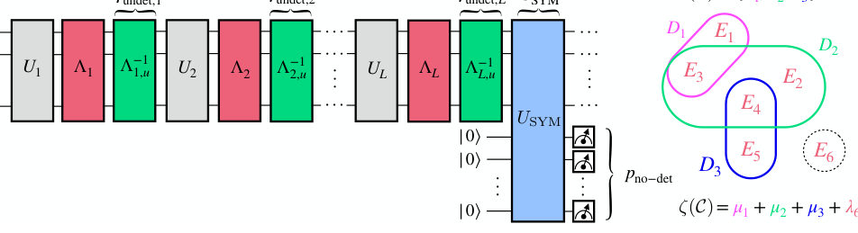
<figcaption class="paper-figure-caption"><b>Fig 1.</b> FIG. 1. Overview of PEC+QED. (a) In a circuit with L-layers of noisy gates, detectable errors are mitigated by measuring symmetries using circuit USYM and post-selecting, retaining circuits with probability pno-det. Remaining errors are mitigated by applying PEC to cancel undetectable noise Λ−1 l,u at each layer l, incurring a sampling cost γ2 undet,l which multiplies per layer. Mitigating noise in USYM introduces a sampling cost CSYM. (b) Given a set of possible symmetries to measure S = {Si}4 i=1, we seek a configuration C ⊂S with minimal cost. Each symmetry Si ∈C has a detectable error set Di and incurs cost µi, while each undetected error Ej incurs cost λj.</figcaption>
</figure>
<figure class="paper-figure-card">
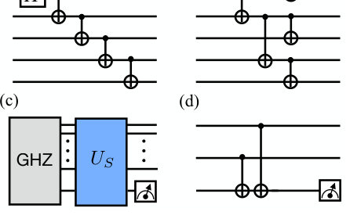
<figcaption class="paper-figure-caption"><b>Fig 2.</b> FIG. 2. (a) GHZ state preparation on n = 8 qubits with centre-out CNOT fan from qubit 3. (b) GHZ state prepara- tion on n = 8 qubits with logarithmic depth [63]. (c) GHZ state preparation and stabilizer measurement circuit. (d) Ex- ample circuit for measuring a ZZ stabilizer.</figcaption>
</figure>
<figure class="paper-figure-card">
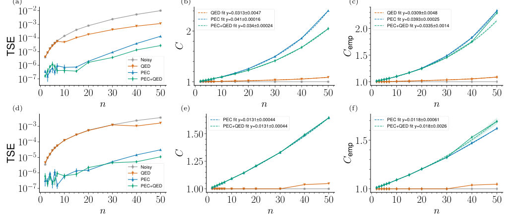
<figcaption class="paper-figure-caption"><b>Fig 3.</b> FIG. 3. GHZ state preparation mitigation for linear and logarithmic depth circuit. The total square error (TSE) and mitigation costs between the output of a noise-free and noisy GHZ state preparation circuit with increasing GHZ state size n. Results obtained using stabilizer circuit simulations with: no mitigation “Noisy” (grey), QED (orange), PEC (blue) and PEC+QED (green), all simulations use 106 shots. Results are shown for linear (a), (b), (c) and logarithmic depth (d), (e), (f) circuits. Mitigation costs are fit to an exponential C(n) = xeyn + z with x + z ∼1. C is the predicted sampling cost using PEC theory and empirical QED discard rate. Cemp is the empirical sampling cost obtained...</figcaption>
</figure>
<figure class="paper-figure-card">
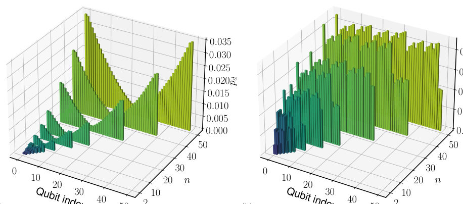
<figcaption class="paper-figure-caption"><b>Fig 4.</b> FIG. 4. Distribution of detectable error probability pd across qubits after propagation and composition of noise channels through n-qubit GHZ state preparation circuits with (a) linear and (b) logarithmic depth. Propagated errors are classified as detectable if they anticommute with at least 1 Z-type GHZ state stabilizer generator. Colours correspond to different values of n.</figcaption>
</figure>
<figure class="paper-figure-card">
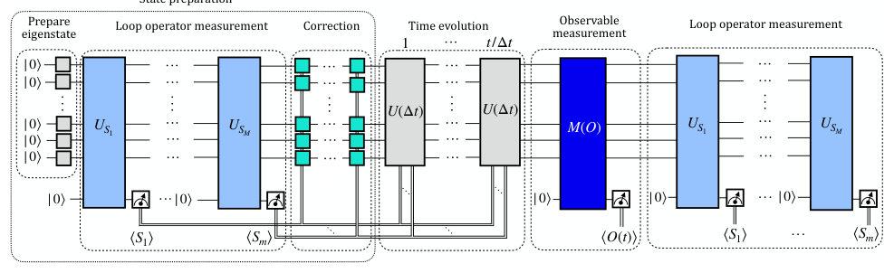
<figcaption class="paper-figure-caption"><b>Fig 5.</b> FIG. 5. Circuits used to study time evolution under the Fermi-Hubbard model with a generalized superfast fermion-to-qubit encoding. State preparation: prepare an eigenstate of both vertex operators and stabilizing loop operators by applying single- qubit Clifford gates, measuring all loop operator expected values {⟨Si⟩}m i=1 and applying corrective operations based on the measurement outcomes, see App. F for more detail. Time evolution: implement approximate evolution to time t by applying t/∆t repeats of a Trotter step U(∆t) evolved to time ∆t, see Eq. (56). Due to vertex operator sign redefinition during state preparation, each Trotter step is classically controlled on loop-operator...</figcaption>
</figure>
</div>

<p><strong>Summary.</strong> The paper presents a method combining Quantum Error Detection (QED) and Probabilistic Error Cancellation (PEC) to estimate expectation values from noisy quantum circuits. By optimizing which symmetries are measured, the technique systematically reduces estimation variance compared to using PEC or QED in isolation. This is demonstrated successfully when simulating dynamics for models like the Fermi-Hubbard model.</p>
<p><strong>Why it may be interesting.</strong> This work directly addresses resource estimation for simulating strongly correlated electron models (like the FH model) under realistic noise conditions, providing tailored error mitigation techniques crucial for near-term quantum simulation hardware.</p>
<details>
<summary>Detailed structure</summary>
<p><strong>Main problem.</strong> The primary goal is to improve quantum estimation accuracy and reduce variance when estimating expectation values of noisy quantum circuits, surpassing standard Probabilistic Error Cancellation (PEC) by integrating Quantum Error Detection (QED). This is achieved through optimizing the selection of symmetry measurements.</p>
<p><strong>Main result.</strong> Combining QED with PEC provides more accurate and lower-variance estimates than either method alone, especially when symmetries are optimized. The approach successfully mitigates errors in simulating complex models like the Fermi-Hubbard model on a lattice.</p>
<p><strong>Method.</strong> The authors combine PEC (using inverse channels $\Lambda^{-1}$) with QED (by post-selecting on error-free measurements) and treat the selection of symmetry measurement configurations as a classical optimization problem to suppress noise impact.</p>
<p><strong>Model / system.</strong> The work applies to general noisy quantum circuits, specifically demonstrating utility for GHZ-state output distributions and simulating the time-dynamics of a generalized superfast encoded Fermi-Hubbard model on lattices.</p>
<p><strong>Key observables.</strong> Total Square Error (TSE), expectation values $\langle O_{	ext{ideal}} 
angle$ vs. $\langle O_{	ext{noisy}} 
angle$, sampling cost ($C_{	ext{PEC+QED}}$).</p>
<p><strong>Important parameters / regimes.</strong> Noise strength ($\lambda$), lattice size ($2 	imes 2$ up to larger systems), and the set of chosen symmetry generators $C$.</p>
<p><strong>Assumptions / limitations.</strong> The optimization framework assumes that carefully selecting symmetries can systematically suppress noise, although noisy measurements themselves introduce limitations.</p>
<p><strong>Figures summary.</strong> Figures illustrate the combination of QED (detecting errors via symmetries) and PEC (handling undetectable noise), showing performance comparisons for GHZ states and lattice models.</p>
<p><strong>Paper structure.</strong> The paper develops the theoretical framework by defining the combined estimator, deriving cost functions based on error detection probabilities ($p_{	ext{no-det}}$), and then applies this optimization procedure to benchmark systems like GHZ state preparation and the Fermi-Hubbard model dynamics.</p>
</details>
<details>
<summary>Abstract</summary>
<p>We show that combining quantum error detection (QED) with probabilistic error cancellation (PEC) gives more accurate and lower-variance estimates than PEC alone, provided that the symmetry measurements required for QED are carefully chosen. Because noisy symmetry measurements can negate the benefits of the PEC+QED approach, we cast the selection of measurement configurations as a classical optimization problem that systematically suppresses the impact of noise. Applying optimized PEC+QED to GHZ-state output distributions and to simulating the time-dynamics of a generalized superfast encoded Fermi-Hubbard model, we find consistent improvements over PEC. For GHZ states, the optimization over symmetry measurement configurations is essential for achieving an advantage. For the Fermi-Hubbard model, PEC+QED improves observable estimation on a $2 \times 2$ lattice and for larger systems the mitigation overheads can be reduced by measuring only subsets of stabilizers. Our results demonstrate the importance of circuit-specific tailoring of QEM techniques and that fault-tolerant design principles may already provide value for near-term devices.</p>
</details>
<p><sub><a href="#top">↑ back to top</a></sub></p>

<p><a id="paper-2607.00779"></a></p>
<h3 id="asymmetric-light-scattering-from-an-atomic-system-with-gain-a-quantum-analysis"><a href="http://arxiv.org/abs/2607.00779v1">Asymmetric Light Scattering from an Atomic System with Gain: A Quantum Analysis</a></h3>
<p><strong>Authors:</strong> Lorena Acevedo, Manuel Donaire<br>
<strong>Type:</strong> theory · <strong>Category:</strong> other · <strong>PDF:</strong> <a href="https://arxiv.org/pdf/2607.00779v1">https://arxiv.org/pdf/2607.00779v1</a><br>
<strong>Analysis basis:</strong> full PDF text, analyzed in chunks
<strong>Topic relevance:</strong> 🔥 <code>interference shaping light</code> <strong>4/5</strong> · <code>Keldysh / 2PI / non-Gaussian methods</code> <strong>3/5</strong> · <code>methods for driven-dissipative</code> <strong>3/5</strong> · <code>correlated / nonlocal dissipation</code> <strong>2/5</strong> · <code>driven-dissipative phase transition</code> <strong>2/5</strong> · <code>non-equilibrium dynamics</code> <strong>2/5</strong> · <code>Tavis-Cummings &amp; cavity-many-emitter</code> <strong>1/5</strong> · <code>correlated cavity matter</code> <strong>1/5</strong> · <code>non-equilibrium universality</code> <strong>1/5</strong></p>
<div class="figure-strip-hint">↔ Scroll figures horizontally</div>
<div class="paper-figures-scroll">
<figure class="paper-figure-card">

<figcaption class="paper-figure-caption"><b>Fig 1.</b> Figure 1. Schematics of the system under study, consisting of two identical three- level atoms and two external fields. A pump field of strength Ωp causes the transient excitation of atom A from its ground state g to its upper level u, from which it decays, rapidly and incoherently, to the intermediate level e at a rate γu, causing an effective pump rate P = Ω2 p/γu. Energy intervals and dissipative channels are depicted. Atom B is in its ground state. The two atoms are illuminated by a weak probe field of strength Ω0, polarization transverse to the interatomic axis and momentum k, quasi- resonant with the g ⇄e transition. Incidence is either transverse or alongside the interatomic axis....</figcaption>
</figure>
<figure class="paper-figure-card">
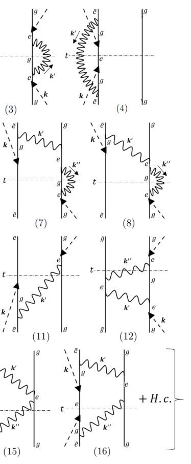
<figcaption class="paper-figure-caption"><b>Fig 2.</b> Figure 2. Diagrammatic representation of scattering processes at leading order. Time runs along the vertical axis from 0 up to the observation time t, both from the top and from the bottom. From the top, the evolution is given by U†(t); from the bottom, it is given by U(t). Solid straight lines represent atomic states, g and e. ’Tilded’ states, ˜g and ˜e, at the initial time stand for the pure states of the mixed state of atom A. Wavy lines stand for virtual photons created and annihilated at the interaction vertices attached to either atom. Dashed arrows represent photons of the external field which are annihilated at interaction vertices attached to either atom. Each vertex represents an...</figcaption>
</figure>
<figure class="paper-figure-card">
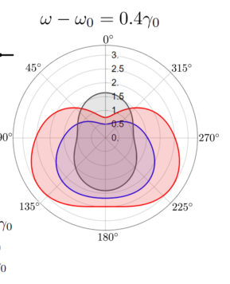
<figcaption class="paper-figure-caption"><b>Fig 3.</b> Figure 3. Angular distribution of the scattered power for frontal incidence W⊥(θ) and different pump rates, P = (0.5, 2, 20)γ0. The interatomic distance is taken at kR = 2, the non-radiative linewidth is γnr = 0.2γ0, and the detuning is fixed at values ω −ω0 = −0.4γ0 (left panel) and ω −ω0 = 0.4γ0 (right panel).</figcaption>
</figure>
<figure class="paper-figure-card">
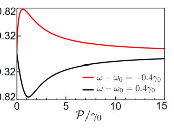
<figcaption class="paper-figure-caption"><b>Fig 4.</b> Figure 4. Graphical representation of the log of the ratio of the scattered power towards the active atom and towards the passive one for frontal incidence, log10 [W⊥(0)/W⊥(π)], for fixed interatomic distance kR = 2, and non-radiative linewidth γnr = 0.2γ0. Left panel: In terms of the detuning ω −ω0, with several pump rates, P = (0.5, 2, 4, 8)γ0. Right panel: In terms of the pump rate P, with detuning ω −ω0 = 0.4γ0 (black line) and ω −ω0 = −0.4γ0 (red line).</figcaption>
</figure>
<figure class="paper-figure-card">

<figcaption class="paper-figure-caption"><b>Fig 5.</b> Figure 5. Angular distribution of the scattered power for side lighting, G in red, L in grey, and two different pump rates, P = 2γ0 (left panel), P = 8γ0 (right panel). The interatomic distance is taken at kR = 2, the non-radiative linewidth is γnr = 0.2γ0, and the detuning is fixed at the negative value ω −ω0 = −0.4γ0.</figcaption>
</figure>
</div>

<p><strong>Summary.</strong> This theoretical paper analyzes asymmetric light scattering from a two-atom system incorporating optical gain. Using advanced quantum diagrammatic techniques, the authors demonstrate that the resulting optical response is fundamentally non-reciprocal—a feature absent in classical models. This highlights how quantum interference effects dictate directional properties when gain and loss are present.</p>
<p><strong>Why it may be interesting.</strong> This work is highly relevant as it pushes beyond standard semiclassical treatments in quantum optics by rigorously demonstrating fundamental non-reciprocal effects arising purely from quantum interference and gain/loss mechanisms in open systems.</p>
<details>
<summary>Detailed structure</summary>
<p><strong>Main problem.</strong> The study investigates the directionality and asymmetry of light scattering from a two-atom system containing gain, focusing on how this response deviates from classical predictions.</p>
<p><strong>Main result.</strong> The fully quantum analysis reveals non-reciprocity in the optical response (forward power depending on the side of incidence), which contradicts classical linear response theory. This asymmetry is linked to interference effects involving phase differences and inter-atom emission.</p>
<p><strong>Method.</strong> The authors employ a full quantum mechanical, diagrammatic perturbation theory approach using time-ordered Green's functions to calculate vacuum expectation values of quadratic field fluctuations.</p>
<p><strong>Model / system.</strong> The system consists of two identical three-level atoms forming a dimer, where one atom is incoherently pumped (gain). The interaction is analyzed under weak probe fields ($\Omega_0$) and involves considering both single-atom and collective scattering processes.</p>
<p><strong>Key observables.</strong> Differential scattered power $W(	heta)$, the ratio of forward/backward scattered powers ($W^G/W^L$), and the dependence on illumination geometry (frontal vs. side lighting).</p>
<p><strong>Important parameters / regimes.</strong> Pump rate ($P$), interatomic distance ($k_R$), probe detuning ($\Delta = \omega - \omega_0$), and the relative phase factors associated with side incidence.</p>
<p><strong>Assumptions / limitations.</strong> The analysis relies on perturbative expansions in the interaction Hamiltonian, integrating out fast dynamics of auxiliary states, and assuming specific limits for time evolution (e.g., $\gamma t \gg 1$).</p>
<p><strong>Figures summary.</strong> Figures illustrate angular distributions ($W(	heta)$) for both frontal and side illumination geometries, comparing quantum predictions against classical models using log-ratio plots.</p>
<p><strong>Paper structure.</strong> The paper builds from defining the physical model and Hamiltonian to calculating scattering power via diagrammatic expansion. It systematically compares results for different illumination geometries (frontal vs. side) and contrasts the fully quantum findings with those derived from classical linear response theory, highlighting points of divergence.</p>
</details>
<details>
<summary>Abstract</summary>
<p>We study the the scattering of light by a binary system of identical atoms in which one of them is incoherently pumped. This system belongs to the kind of non-parity symmetric optical systems in which gains and losses are partially compensated. We carry out a fully quantum analysis of the directionality of the radiation scattered from the atoms when the incident light strikes the system either perpendicular or alongside the interatomic axis. We find that, generally, while the degree of asymmetry depends on the pump rate, the preferred direction for emission depends on the interatomic distance and the detuning of the probe field with respect to the resonant frequency. On physical grounds, for the case of frontal illumination, the asymmetry is the result of the interference of the photons emitted from different atoms. On the contrary, for side lighting, the asymmetry with respect to the side of incidence is caused by both the phase difference between the probe field photons that strike each atom and the interference between the photons emitted from different atoms. Further, for side lighting too, our quantum approach demonstrates that the forward scattered power depends on the side of incidence, which reveals the lack of reciprocity in the quantum optical response of the system. This result conflicts with what is obtained within a classical approach.</p>
</details>
<p><sub><a href="#top">↑ back to top</a></sub></p>

<p><a id="paper-2607.00653"></a></p>
<h3 id="far-field-spatial-coherence-driven-by-lossy-objects-first-principles-approach-unifying-scattering-of-quantum-light-and-thermal-emission"><a href="http://arxiv.org/abs/2607.00653v1">Far-field spatial coherence driven by lossy objects: first-principles approach unifying scattering of quantum light and thermal emission</a></h3>
<p><strong>Authors:</strong> Alessandro Ciattoni<br>
<strong>Type:</strong> theory · <strong>Category:</strong> other · <strong>PDF:</strong> <a href="https://arxiv.org/pdf/2607.00653v1">https://arxiv.org/pdf/2607.00653v1</a><br>
<strong>Analysis basis:</strong> full PDF text, analyzed in chunks
<strong>Topic relevance:</strong> 🔥 <code>interference shaping light</code> <strong>4/5</strong> · <code>Keldysh / 2PI / non-Gaussian methods</code> <strong>3/5</strong> · <code>correlated / nonlocal dissipation</code> <strong>3/5</strong> · <code>methods for driven-dissipative</code> <strong>3/5</strong> · <code>driven-dissipative phase transition</code> <strong>2/5</strong> · <code>correlated cavity matter</code> <strong>1/5</strong> · <code>non-equilibrium dynamics</code> <strong>1/5</strong> · <code>non-equilibrium universality</code> <strong>1/5</strong></p>
<div class="figure-strip-hint">↔ Scroll figures horizontally</div>
<div class="paper-figures-scroll">
<figure class="paper-figure-card">

<figcaption class="paper-figure-caption"><b>Fig 1.</b> Figure 1. Schematic illustration of far-field spatial coherence generation under fundamental thermodynamic limits. Wavy lines represent incoherent thermal illumination converging from the surrounding isotropic bath, while linked phase-fronts denote emergent transverse spatial correlations between distinct far-field observation directions (n and n′). (a) Ideally transparent limit: A lossless scatterer merely redirects incoming thermal photons, preserving the completely uncorrelated nature of the ra- diation (µ2 = 0 for distinct directions). (b) Thermal cloaking: At global thermodynamic equilibrium (Ts = Tem), deterministic scattering and intrinsic emission perfectly balance, rendering the...</figcaption>
</figure>
<figure class="paper-figure-card">

<figcaption class="paper-figure-caption"><b>Fig 2.</b> Figure 2. Degradation of far-field spatial coherence under coherent illumination. (a) Schematic representation of the physical interplay: a deterministic incident laser field (red plane waves) is elastically scattered by an arbitrary dissipative object (blue dashed spherical phase fronts), simultaneously competing with the stochastic intrinsic thermal emission (orange wavy arrows). (b) Thermodynamic phase diagram illustrating the normalized temperature threshold Tth/Tmacro (from Eq. (30)) at which spatial coherence breaks down, as a function of the size parameter a/¯λ for a fixed incident illumination (constant Iinc and ¯ω). The normalizing factor Tmacro represents the asymptotic plateau...</figcaption>
</figure>
<figure class="paper-figure-card">

<figcaption class="paper-figure-caption"><b>Fig 3.</b> Figure 3. Geometric purification of spatially entangled light by a dissipative macroscopic scatterer. (Left) The incident continuous-variable state is highly multimode (Schmidt rank K ≫1). The severely reduced macroscopic spatial coherence (µ2 in ≪1) physically manifests as the exact local counterpart of the non-local spatial entanglement. (Center) Operating in a regime where the thermal population at the carrier frequency is sufficiently small to neglect thermal emission, the dissipative object introduces no relevant thermal noise, instead acting as a passive, non-unitary spatial filter (cyan wavy arrows represent the incoming quantum field, while dark blue wavy arrows denote the...</figcaption>
</figure>
</div>

<p><strong>Summary.</strong> The paper presents a first-principles quantum framework unifying how far-field spatial coherence is determined by both incident quantum light scattering and intrinsic thermal emission from dissipative objects. By using the Modified Langevin Noise Formalism, it shows that the outgoing coherence results from an algebraic sum of filtering (scattering) and projection (thermal emission) mechanisms. This has profound implications for designing lossy quantum optical components.</p>
<p><strong>Why it may be interesting.</strong> This work provides a unified quantum electrodynamic treatment of light propagation through realistic, lossy media, connecting fundamental principles like unitarity directly to macroscopic phenomena like the van Cittert-Zernike theorem and thermal cloaking.</p>
<details>
<summary>Detailed structure</summary>
<p><strong>Main problem.</strong> To develop a first-principles framework that unifies the scattering of quantum light and intrinsic thermal emission from finite, dissipative objects to describe far-field spatial coherence.</p>
<p><strong>Main result.</strong> The outgoing far-field spatial coherence separates into an algebraic superposition of two geometry-driven mechanisms: elastic scattering (a non-unitary filter) and thermal emission (deriving van Cittert-Zernike theorem).</p>
<p><strong>Method.</strong> The analysis employs the Modified Langevin Noise Formalism (MLNF) to calculate outgoing correlation dyadics, analyzing asymptotic limits for far-field correlations.</p>
<p><strong>Model / system.</strong> The system involves an arbitrary dispersive and absorbing magnetodielectric object interacting with incident quantum light fields. The theoretical foundation is built upon coupled radiation-matter operators within the MLNF framework.</p>
<p><strong>Key observables.</strong> Far-field spatial coherence ($\mu^2_{	ext{out}}$), outgoing correlation dyadic ($  ext{C}_{    ext{out}}$), and thermal shadow structure.</p>
<p><strong>Important parameters / regimes.</strong> Temperature ($T_{em}$), scattering cross-sections ($\sigma_{	ext{sca}}, \sigma_{	ext{abs}}$), and the dimensionless parameter $\Gamma$.</p>
<p><strong>Assumptions / limitations.</strong> The framework assumes rigorous description of material dissipation (Kirchhoff's law) and relies on statistical independence between incident radiation and object excitations in some derivations.</p>
<p><strong>Figures summary.</strong> Figures schematically illustrate coherence generation across four thermodynamic limits: transparent, global equilibrium, cold vacuum, and cold scatterer, demonstrating the structured nature of the outgoing correlation dyadic.</p>
<p><strong>Paper structure.</strong> The paper builds by first establishing the general input-output relationship using MLNF, then decomposing the resulting far-field correlation into scattering and thermal components, and finally analyzing specific physical limits (thermal/coherent illumination) to derive quantitative coherence bounds.</p>
</details>
<details>
<summary>Abstract</summary>
<p>Far-field spatial coherence dictates the interference properties of scattered light and thermal emission. Traditionally, these phenomena are treated through disjointed paradigms: classical scattering descriptions assume cold objects lacking quantum fluctuations, idealized quantum scattering schemes ignore dissipation, and semiclassical fluctuational electrodynamics relies on phenomenological noise currents, precluding the consistent treatment of incident quantum states. Here, we develop a first-principles framework based on the modified Langevin noise formalism to unify the scattering of quantum light and the intrinsic thermal emission of finite dissipative objects. We demonstrate that the outgoing far-field spatial coherence separates into an algebraic superposition of two geometry-driven mechanisms, coupled by the global unitarity of the radiation-matter dynamics. The first mechanism, elastic scattering, acts as a non-unitary spatial filter, mode-selectively attenuating and reshaping incident quantum correlations. The second mechanism, thermal emission, originates from localized material dissipation and projects the object's absorption profile into the far field, providing a quantum-vectorial derivation of the macroscopic van Cittert-Zernike theorem. Applying this framework across optical regimes, we determine operational bounds for lossy quantum photonics. Under chaotic thermal illumination, we analytically demonstrate thermal cloaking at equilibrium and show that a passive sink casts a structured thermal shadow geometrically identical to a primary emitter. Under coherent illumination, we derive a thermodynamic phase diagram bounding macroscopic phase correlations, demonstrating that subwavelength nanostructures undergo substantial coherence degradation compared to bulk objects. Finally, under spatially entangled illumination...</p>
</details>
<p><sub><a href="#top">↑ back to top</a></sub></p>

<p><a id="paper-2607.00668"></a></p>
<h3 id="spinterface-like-mechanism-of-the-chirality-induced-spin-selectivity-in-donor-chiral-bridge-acceptor-complexes"><a href="http://arxiv.org/abs/2607.00668v1">Spinterface-like mechanism of the chirality-induced spin selectivity in donor chiral-bridge acceptor complexes</a></h3>
<p><strong>Authors:</strong> Subhajit Sarkar, Oliver L. A. Monti, Yonatan Dubi<br>
<strong>Type:</strong> theory · <strong>Category:</strong> other · <strong>PDF:</strong> <a href="https://arxiv.org/pdf/2607.00668v1">https://arxiv.org/pdf/2607.00668v1</a><br>
<strong>Analysis basis:</strong> full PDF text, analyzed in chunks
<strong>Topic relevance:</strong> 🔥 <code>methods for driven-dissipative</code> <strong>4/5</strong> · <code>Keldysh / 2PI / non-Gaussian methods</code> <strong>3/5</strong> · <code>spintronics-quantum-optics interface</code> <strong>3/5</strong> · <code>Kondo &amp; dissipative impurity</code> <strong>2/5</strong> · <code>non-equilibrium dynamics</code> <strong>2/5</strong> · <code>correlated / nonlocal dissipation</code> <strong>1/5</strong> · <code>driven-dissipative phase transition</code> <strong>1/5</strong> · <code>exotic spin models in light-matter</code> <strong>1/5</strong> · <code>non-equilibrium universality</code> <strong>1/5</strong></p>
<div class="figure-strip-hint">↔ Scroll figures horizontally</div>
<div class="paper-figures-scroll">
<figure class="paper-figure-card">

<figcaption class="paper-figure-caption"><b>Fig 1.</b> Figure 1: Schematic depiction for the Donor-chiral-bridge-acceptor (D–χB–A) system within the Hubbard picture. Photoexcitation of the donor (D) injects an elec- tron into the chiral bridge χB (with N = 4), which propagates toward the acceptor-sink (A) with hopping amplitude thop and can recombine back to D. Injection and recombination are described by the Lindblad operators Linj and Lrec, while local spin mixing at the donor-bridge interface is captured by L± 1 (highlighted by the faded yellow spin to denote the spin-flip oper- ator, rather than double occupancy of the donor excited state). The through-bridge current generates an effective interfacial field gµBBeff = α0J (a...</figcaption>
</figure>
<figure class="paper-figure-card">

<figcaption class="paper-figure-caption"><b>Fig 2.</b> Fig. 1, the closest scenario to that of Ref. 12. The donor (D) hosts two electronic orbitals</figcaption>
</figure>
<figure class="paper-figure-card">

<figcaption class="paper-figure-caption"><b>Fig 3.</b> Fig. 1. The effective Hamiltonian for the donor is therefore Hdonor = X</figcaption>
</figure>
<figure class="paper-figure-card">

<figcaption class="paper-figure-caption"><b>Fig 4.</b> Figure 2: (a) Schematic of D–χB–A complex in terms of its singlet-triplet state manifold. The bare singlet-triplet gap in the donor is governed by the exchange coupling JD. The same exchange coupling in the donor-bridge manifold is distance-dependent, with Jj being smaller for transfer to a more distant bridge site. (b) Thermalization mechanism at the interface. The current-induced field produces a Zeeman splitting ∆1 = gµBBeff of the single-electron levels on the first bridge site, enabling local spin-flip jumps Lj=1 and L† j=1 between |ασ, 1 ↑⟩and |ασ, 1 ↓⟩. The donor spin couples to bridge spins via exchange Jj SD ·Sj, and donor singlet-triplet interconversion is modeled by the...</figcaption>
</figure>
<figure class="paper-figure-card">
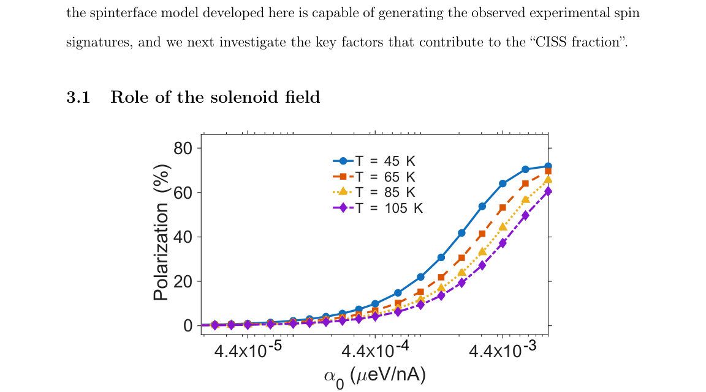
<figcaption class="paper-figure-caption"><b>Fig 5.</b> Figure 3: Spin–polarization vs. effective strength of the solenoid field at different temperatures: Plot of the steady-state spin–polarization P versus the solenoidal-coupling magnitude α0 on a log scale at a fixed mixing rate γm = 0.014thop; curves correspond to four temperatures (see legend).</figcaption>
</figure>
</div>

<p><strong>Summary.</strong> The paper introduces an intramolecular spinterface mechanism to explain the chirality-induced spin selectivity (CISS) effect in isolated donor-chiral-bridge-acceptor complexes. Using a Lindblad master equation, the authors show that photoexcited current generates an effective magnetic field at the donor interface. This internal field breaks symmetry and allows for robust, measurable spin polarization signatures compatible with experimental EPR data.</p>
<p><strong>Why it may be interesting.</strong> This work provides a quantum mechanical framework for understanding spin selectivity in molecular electronics using open quantum system techniques (Lindblad dynamics) to model non-equilibrium charge transport phenomena.</p>
<details>
<summary>Detailed structure</summary>
<p><strong>Main problem.</strong> To explain the chirality-induced spin selectivity (CISS) effect observed in donor-chiral-bridge-acceptor complexes without relying on an external metal interface.</p>
<p><strong>Main result.</strong> The authors propose and model an intramolecular spinterface-like mechanism where a current-induced solenoidal field breaks symmetry, enabling robust CISS-like spin filtering in isolated molecular systems.</p>
<p><strong>Method.</strong> The study employs a two-electron Lindblad master equation approach to simulate the time evolution of the system's density matrix under photoexcitation and charge transfer.</p>
<p><strong>Model / system.</strong> The physical system is a D–$\chi$B–A complex. The model incorporates Hamiltonian terms for donor, bridge (tight-binding chain), Zeeman splitting, and exchange interactions, all evolving via the Lindblad master equation to capture dissipation.</p>
<p><strong>Key observables.</strong> Spin polarization ($P$), measured in time-resolved EPR studies, which is compared against theoretical predictions.</p>
<p><strong>Important parameters / regimes.</strong> Solenoidal coupling strength ($\alpha_0$), temperature ($T$), and spin-mixing rates ($\gamma_m$).</p>
<p><strong>Assumptions / limitations.</strong> The mechanism relies on the charge current generating an effective solenoidal field at the donor–bridge interface, breaking symmetry without intrinsic SOC on the bridge.</p>
<p><strong>Figures summary.</strong> Figures illustrate the system schematic, the singlet-triplet state manifold, and show how polarization depends nonmonotonically on spin-mixing rates ($\gamma_m$) and saturates with increasing solenoidal coupling strength ($\alpha_0$).</p>
<p><strong>Paper structure.</strong> The paper introduces the problem of CISS in isolated complexes, develops a detailed Lindblad model incorporating current-induced fields (the spinterface), calculates steady-state polarization by solving the master equation, and analyzes the dependence on key physical parameters like temperature and coupling strength.</p>
</details>
<details>
<summary>Abstract</summary>
<p>The chirality-induced spin selectivity (CISS) effect has been invoked to explain recent reports of differences in the time-resolved EPR signals between chiral and achiral molecules. However, the microscopic origin of these differences and their connection to CISS remains contested, particularly since these systems lack a metal interface. Here we introduce an intramolecular spinterface-like mechanism that naturally arises within donor-chiral bridge-acceptor (D--$χ$B--A) complexes and quantitatively reproduces experimentally reported observed spin polarization in time-resolved EPR studies. In our two-electron Lindblad model, the photoexcited charge-transfer electron traversing the chiral bridge exchanges with the residual donor electron, which acts as a localized magnetic moment analogous to an induced magnetic moment on an electrode surface. The resulting through-bridge charge current produces an effective solenoidal field at the donor--bridge interface, breaking spin degeneracy and directional symmetry, thus enabling spin-selective transport without invoking intrinsic spin-orbit coupling on the bridge. We show that the interplay between this current-induced field, donor thermalization (which breaks time-reversal symmetry), and bridge spin mixing yields tens-of-percent polarization over realistic experimental conditions and charge-transfer time scales, matching reported CISS signatures in triads and DNA hairpins. By explicitly resolving the dependence on solenoidal coupling strength, temperature, and spin-mixing rates, the model identifies the regime in which internal spinterfaces can generate robust CISS-like spin filtering. These findings demonstrate that CISS-like signals in isolated D--$χ$B--A complexes are fully compatible with a spinterface mechanism, providing a unified conceptual framework for interpreting both device-based and molecule-internal CISS platforms.</p>
</details>
<p><sub><a href="#top">↑ back to top</a></sub></p>

<p><a id="paper-2607.00702"></a></p>
<h3 id="weak-coupling-tensor-cross-interpolation-impurity-solver-for-nonequilibrium-dynamical-mean-field-theory"><a href="http://arxiv.org/abs/2607.00702v1">Weak-coupling tensor cross interpolation impurity solver for nonequilibrium dynamical mean-field theory</a></h3>
<p><strong>Authors:</strong> Shuta Matsuura, Hiroshi Shinaoka, Philipp Werner, Naoto Tsuji<br>
<strong>Type:</strong> theory · <strong>Category:</strong> strongly correlated electrons · <strong>PDF:</strong> <a href="https://arxiv.org/pdf/2607.00702v1">https://arxiv.org/pdf/2607.00702v1</a><br>
<strong>Analysis basis:</strong> full PDF text, analyzed in chunks
<strong>Topic relevance:</strong> 🔥 <code>Keldysh / 2PI / non-Gaussian methods</code> <strong>4/5</strong> · 🔥 <code>non-equilibrium dynamics</code> <strong>4/5</strong> · <code>Kondo &amp; dissipative impurity</code> <strong>3/5</strong> · <code>methods for driven-dissipative</code> <strong>3/5</strong> · <code>driven-dissipative phase transition</code> <strong>2/5</strong> · <code>analog quantum simulation</code> <strong>1/5</strong> · <code>non-equilibrium universality</code> <strong>1/5</strong></p>
<div class="figure-strip-hint">↔ Scroll figures horizontally</div>
<div class="paper-figures-scroll">
<figure class="paper-figure-card">

<figcaption class="paper-figure-caption"><b>Fig 1.</b> FIG. 1. L-shaped contour C that consists of three branches: the forward real-time branch C0, the backward real-time branch C1, and the imaginary-time branch C2.</figcaption>
</figure>
<figure class="paper-figure-card">
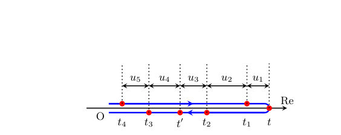
<figcaption class="paper-figure-caption"><b>Fig 2.</b> FIG. 2. The definition of the variables u1, · · · , un+1. In this illustration, we take n = 4 and k = 2 with (s1, s2, s3, s4) = (0, 1, 1, 0).</figcaption>
</figure>
<figure class="paper-figure-card">

<figcaption class="paper-figure-caption"><b>Fig 3.</b> FIG. 3. Results obtained with the weak-coupling nonequilib- rium TCI impurity solver for the impurity model (7) with ∆↓(z, z′) = 0 and ∆R ↑(t, t′), ∆⌉ ↑(t, τ ′), ∆&lt; ↑(t, t′) given by Eq. (61). We set δµ = 0 (particle-hole symmetric system). The one-dimensional cuts of (a) Im G&lt; ↑(t, t′) at t = tmax and</figcaption>
</figure>
<figure class="paper-figure-card">

<figcaption class="paper-figure-caption"><b>Fig 4.</b> FIG. 4. Convergence of the error of the lesser Green’s function with respect to (a) the maximum order nmax and (b) the bond dimension χ for the exactly solvable impurity model (Eq. (7) with ∆↓(z, z′) = 0) with particle-hole symmetry (δµ = 0). The parameters are β = 5/v, U = 3v, tmax = 3/v and α = 0.5. In panel (a), the maximum bond dimension is fixed to χ = 80, and in panel (b), the maximum order is fixed to nmax = 14.</figcaption>
</figure>
<figure class="paper-figure-card">

<figcaption class="paper-figure-caption"><b>Fig 5.</b> FIG. 6. Convergence of the error of (a,b) the lesser Green’s function and (c,d) the greater Green’s function for the exactly solvable impurity model (Eq. (7) with ∆↓(z, z′) = 0) without particle-hole symmetry (δµ = 0.825v). In panels (a,c), the error is plotted as a function of the maximum order nmax, and in panels (b,d), the error is plotted as a function of the maximum bond dimension χ. The parameters are β = 5/v, U = 3v, and tmax = 3/v. In panels (a,c), the bond dimension is fixed to χ = 80, and in panels (b,d), the maximum order is fixed to nmax = 14.</figcaption>
</figure>
</div>

<p><strong>Summary.</strong> The paper introduces an advanced impurity solver for nonequilibrium Dynamical Mean-Field Theory (DMFT) by combining weak-coupling expansion with Tensor Cross Interpolation (TCI). This technique efficiently calculates complex high-dimensional integrals, allowing accurate simulation of time evolution in strongly correlated electron systems like the Hubbard model. It is particularly valuable because it remains numerically controlled away from half-filling where other methods fail.</p>
<p><strong>Why it may be interesting.</strong> This work provides a powerful numerical tool that extends DMFT calculations into non-equilibrium regimes where standard Monte Carlo methods fail due to the sign problem, offering insights into real-time quantum dynamics.</p>
<details>
<summary>Detailed structure</summary>
<p><strong>Main problem.</strong> Simulating nonequilibrium quantum many-body systems where computational complexity grows exponentially with real time.</p>
<p><strong>Main result.</strong> The developed solver accurately reproduces known quench dynamics, showing that the dynamical transition at half-filling evolves into a smooth crossover when doping occurs.</p>
<p><strong>Method.</strong> It implements an impurity solver for Nonequilibrium Dynamical Mean-Field Theory (DMFT) using a weak-coupling expansion combined with the Tensor Cross Interpolation (TCI) algorithm to handle high-dimensional integrals efficiently.</p>
<p><strong>Model / system.</strong> The method is applied to lattice models, specifically the Hubbard model, analyzed via its mapping onto an impurity problem solved on the Keldysh contour in the complex time plane. The Hamiltonian involves interaction terms U(t).</p>
<p><strong>Key observables.</strong> Two-time Green's functions (lesser/greater), spectral functions ($ ext{Im} G^R_\sigma(\omega)$), and quench dynamics.</p>
<p><strong>Important parameters / regimes.</strong> Interaction strength U, filling fraction (e.g., half-filled vs 3/4-filled), maximum real time $t_{	ext{max}}$, and expansion order $n_{	ext{max}}$.</p>
<p><strong>Assumptions / limitations.</strong> The method relies on the weak-coupling expansion and assumes that the integrands possess a low-rank structure amenable to tensor decomposition via TCI.</p>
<p><strong>Figures summary.</strong> Figures illustrate convergence checks showing error reduction with increasing expansion order ($n_{	ext{max}}$) or bond dimension ($\chi$), and compare TCI results against exact solutions for Green's functions in both time and frequency domains.</p>
<p><strong>Paper structure.</strong> The paper systematically develops the mathematical framework by defining the Kadanoff-Baym contour, detailing iterative procedures for transient vs. steady states, and finally presenting the weak-coupling expansion solved via TCI to evaluate high-dimensional integrals.</p>
</details>
<details>
<summary>Abstract</summary>
<p>Simulating nonequilibrium quantum many-body systems remains a major challenge due to the exponential growth of the computational complexity with real time. Here we implement a nonequilibrium impurity solver based on the weak-coupling expansion and the tensor cross interpolation (TCI), and apply it to nonequilibrium dynamical mean-field theory (DMFT). The method approximates the integrands of the high-dimensional integrals arising in the weak-coupling expansion in a tensor-train form, enabling efficient evaluations without stochastic sampling and thereby mitigating the sign problem affecting continuous-time quantum Monte Carlo (CT-QMC) methods. Benchmark calculations for an exactly solvable nonequilibrium impurity model agree well with the exact results and reveal a low-rank structure of the integrands. When applied to interaction-quench problems in the half-filled Hubbard model, the method reproduces fast thermalization at a critical interaction strength with accuracy comparable to CT-QMC. Away from half filling, where the sign problem becomes even more severe, the present approach remains well controlled, revealing a crossover instead of a sharply defined fast thermalization point in the 3/4-filled case. The solver can also be applied to steady-state DMFT problems, yielding accurate spectral functions in the metallic regime without analytic continuation.</p>
</details>
<p><sub><a href="#top">↑ back to top</a></sub></p>

<p><a id="paper-2607.00110"></a></p>
<h3 id="optically-active-single-hole-spin-in-znse"><a href="http://arxiv.org/abs/2607.00110v1">Optically Active Single Hole Spin in ZnSe</a></h3>
<p><strong>Authors:</strong> Amirehsan Alizadehherfati, Yuxi Jiang, Kelsey J. Mirrielees, Nils von den Driesch, Christine Falter, Yurii Kutovyi, Amirehsan Boreiri, Douglas L. Irving, Alexander Pawlis, Edo Waks<br>
<strong>Type:</strong> both · <strong>Category:</strong> quantum information and computing · <strong>PDF:</strong> <a href="https://arxiv.org/pdf/2607.00110v1">https://arxiv.org/pdf/2607.00110v1</a><br>
<strong>Analysis basis:</strong> full PDF text, analyzed in chunks
<strong>Topic relevance:</strong> 🔥 <code>QC/QI experiment</code> <strong>4/5</strong> · 🔥 <code>spintronics-quantum-optics interface</code> <strong>4/5</strong> · <code>exotic spin models in light-matter</code> <strong>3/5</strong> · <code>quantum optics experiment</code> <strong>3/5</strong> · <code>Kondo &amp; dissipative impurity</code> <strong>1/5</strong> · <code>analog quantum simulation</code> <strong>1/5</strong> · <code>quantum measurements</code> <strong>1/5</strong></p>
<div class="figure-strip-hint">↔ Scroll figures horizontally</div>
<div class="paper-figures-scroll">
<figure class="paper-figure-card">

<figcaption class="paper-figure-caption"><b>Fig 1.</b> Figure 1: Formation energy diagrams. Left panel: calculated formation energies of the nitrogen substitutional in ZnSe. Right panel: calculated formation energies of other impurities in ZnSe.</figcaption>
</figure>
<figure class="paper-figure-card">
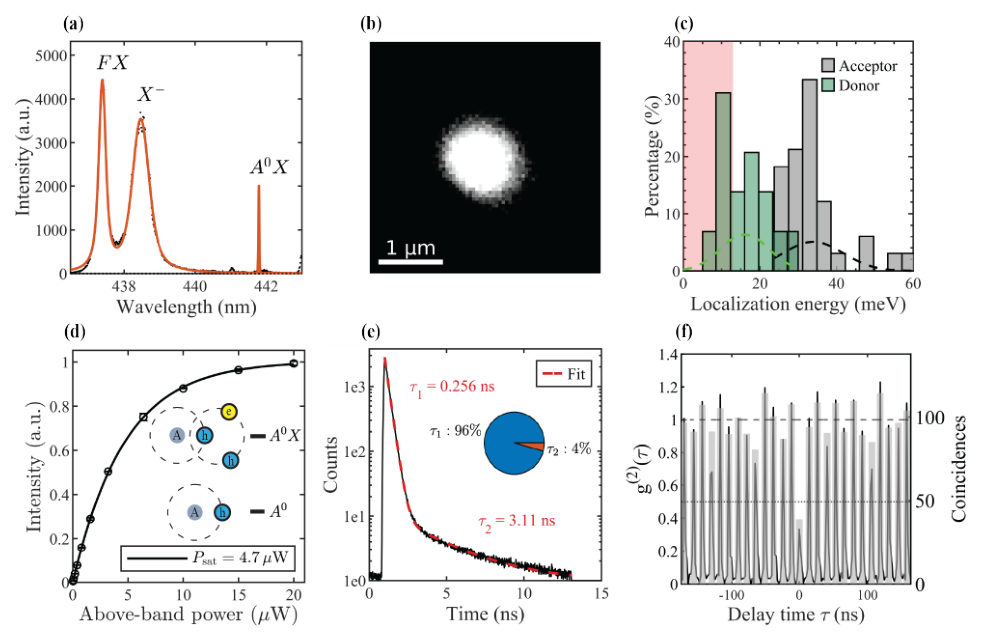
<figcaption class="paper-figure-caption"><b>Fig 2.</b> Figure 2: Photoluminescence characterization. (a) Sample spectrum containing three main components, free exciton (labeled as FX), negatively charged trion (labeled as X−) and bound exciton line (labeled as A0X) (b) Photoluminescence spatial image of the bound exciton line, achieved by selective filtering the sharp peak. (c) Histogram of bound excitons localization energies, indicating two distributions of peaks for acceptors (gray) and donors (green). We collected the data from 30 different acceptor sites and verified them through magnetospectroscopy. The shaded region indicates the region masked by the strong trion envelope in our sample. (d) Power-dependent photoluminescence excitation...</figcaption>
</figure>
<figure class="paper-figure-card">

<figcaption class="paper-figure-caption"><b>Fig 3.</b> Figure 3: Photoluminescence excitation measurement of a single acceptor-bound exciton. (a) Spectrum of emission in the absence and presence of above-band excitation (labeled as ABE). (b) Level structure and charge states of the acceptor system. The arrows show the simplified dominant contribution of each laser. (c) Intensity of emission as a function of above-band excitation for different powers of resonant excitation (see legend). (d) Central wavelength of emission as a function of above-band power for different powers of resonant excitation. The trend shows a saturating shift toward higher wavelengths.</figcaption>
</figure>
<figure class="paper-figure-card">

<figcaption class="paper-figure-caption"><b>Fig 4.</b> Figure 4: Magnetic and Raman spectroscopy. (a) Photoluminescence spectrum as a function of magnetic field. (b) Energy splitting of the spectral peaks as a function of magnetic field. The blue and red data points correspond to horizontal (H) and vertical (V) polarizations, respectively. Solid lines represent linear fits extracting the Zeeman splitting rate for each polarization state. (c) Level structure of the acceptor ground and excited state based on extracted g-values. (d-e) Raman sideband (cross-polarized) appears at the partner transition energy when pumping the opposite polarization. For this measurement, we fix the external magnetic field to 6 T. (f) Integrated intensity of Raman...</figcaption>
</figure>
</div>

<p><strong>Summary.</strong> This paper reports on the successful realization and characterization of optically active single hole spins in ZnSe quantum wells by utilizing acceptor impurities instead of traditional p-doping. By combining DFT calculations, time-resolved spectroscopy, and photon correlation measurements, the authors confirm nitrogen as a promising host impurity for developing solid-state spin qubits and single-photon sources.</p>
<p><strong>Why it may be interesting.</strong> This work directly addresses solid-state quantum emitters for qubits. The combination of theoretical defect engineering (DFT) with precise optical characterization of spin states makes it highly relevant to quantum information research in semiconductors.</p>
<details>
<summary>Detailed structure</summary>
<p><strong>Main problem.</strong> The goal is to create a promising platform for optically active spin qubits and single-photon sources in ZnSe by overcoming historical p-doping limitations.</p>
<p><strong>Main result.</strong> The authors successfully isolated and characterized a single-hole spin bound to an acceptor impurity, identifying nitrogen as the most likely candidate based on spectroscopic and theoretical evidence.</p>
<p><strong>Method.</strong> A combination of first-principles DFT calculations (to predict defect levels) and advanced optical spectroscopy techniques (PL, time-resolved measurements, magnetospectroscopy) was employed.</p>
<p><strong>Model / system.</strong> The system is a single-hole spin localized at an acceptor impurity within a ZnSe quantum well. The physics involves charge state transitions ($|A^-
angle \leftrightarrow |A^0
angle$) and the formation of an exciton complex ($|A^0X
angle$).</p>
<p><strong>Key observables.</strong> Antibunching ($g^{(2)}(0)$), effective hole g-factor (0.7), optical resonance linewidth ($\approx 26.7 	ext{ GHz}$), and localization energy ($\sim 34 	ext{ meV}$).</p>
<p><strong>Important parameters / regimes.</strong> Fast radiative recombination lifetime ($\sim 244 	ext{ ps}$); the dependence of emission intensity on above-band vs. resonant pump power.</p>
<p><strong>Assumptions / limitations.</strong> The analysis assumes that the observed acceptor state originates from residual nitrogen background rather than intentionally introduced dopants, and that the system can be modeled using steady-state rate equations.</p>
<p><strong>Figures summary.</strong> Figures illustrate formation energy comparisons for various impurities; PL spectra show distinct exciton components; time decay fits confirm fast emission lifetimes; and $g^{(2)}(	au)$ measurements demonstrate antibunching.</p>
<p><strong>Paper structure.</strong> The paper progresses from identifying the physical challenge (p-doping limitations) to proposing an optical activation method. It then uses DFT calculations to identify the impurity, followed by detailed spectroscopic characterization of the bound exciton and spin properties using time-resolved and magnetic measurements.</p>
</details>
<details>
<summary>Abstract</summary>
<p>Semiconductor hole spins offer a pathway to extended coherence times by decoupling from nuclear magnetic noise, while their spin-orbit coupling enables fast all-electrical control. In ZnSe, however, realizing this potential has been limited by p-doping challenges. Here, we circumvent this limit by optically activating acceptors within the ZnSe quantum well. We isolate a single-hole spin bound to a shallow acceptor, confirmed by antibunching and accessed via the fast (244 ps) radiative recombination of a bound exciton. Magnetic and Raman spectroscopy of the ground state reveal an effective hole g-factor of 0.7 and an optical resonance linewidth of 26.7 GHz. Complementary first-principles simulations, together with the experimental results, provide evidence that points toward nitrogen as the most likely acceptor impurity. These results introduce a promising new platform for optically active spin qubits and single-photon sources in ZnSe.</p>
</details>
<p><sub><a href="#top">↑ back to top</a></sub></p>

<p><a id="paper-2607.00462"></a></p>
<h3 id="closed-loop-control-for-two-qubit-gates-with-trapped-ions"><a href="http://arxiv.org/abs/2607.00462v1">Closed-loop control for two-qubit gates with trapped ions</a></h3>
<p><strong>Authors:</strong> Eduardo J. Páez, Seyed Shakib Vedaie, Barry C. Sanders<br>
<strong>Type:</strong> theory · <strong>Category:</strong> other · <strong>PDF:</strong> <a href="https://arxiv.org/pdf/2607.00462v1">https://arxiv.org/pdf/2607.00462v1</a><br>
<strong>Analysis basis:</strong> full PDF text, analyzed in chunks
<strong>Topic relevance:</strong> 🔥 <code>QC/QI experiment</code> <strong>4/5</strong> · 🔥 <code>quantum measurements</code> <strong>4/5</strong> · <code>measurement-induced transitions</code> <strong>3/5</strong> · <code>methods for driven-dissipative</code> <strong>3/5</strong> · <code>non-equilibrium dynamics</code> <strong>1/5</strong> · <code>quantum optics experiment</code> <strong>1/5</strong></p>
<div class="figure-strip-hint">↔ Scroll figures horizontally</div>
<div class="paper-figures-scroll">
<figure class="paper-figure-card">
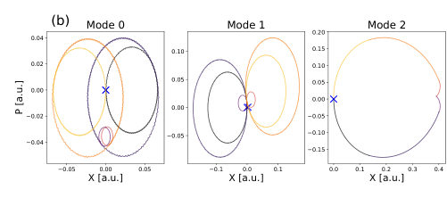
<figcaption class="paper-figure-caption"><b>Fig 1.</b> Figure 1. (a) Pulse sequence designed by employing the SotA method and the corresponding phase-space trajectories. The colours are arbitrary and intended to guide the eye over each piecewise constant segment. The horizontal dashed line rep- resents the root mean square (RMS) value of the pulse se- quence. (b) Ideal phase-space trajectories. The quadrature components of position X and momentum P are given in ar- bitrary units (a.u.). ‘Mode 0’ is the CoM, ‘Mode 1’ is the tilt mode, and ‘Mode 2’ the ‘plucky’ mode. The colour of the trajectory is associated with the piecewise-constant segment of the pulse sequence shown in (a). The blue ‘X’ markers in (b) indicate the starting and ending points...</figcaption>
</figure>
<figure class="paper-figure-card">
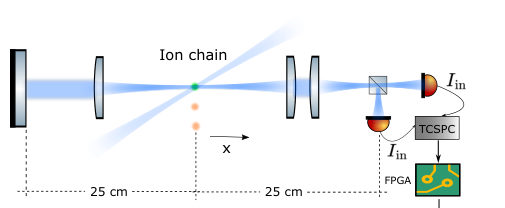
<figcaption class="paper-figure-caption"><b>Fig 2.</b> Figure 2. Diagram of the CLPM-scheme. A three-ion chain is illustrated, where the orange dots represent gate ions and the green dot represents the spectator ion. The spectator ion is illuminated with an external coherent laser coupled to the 2S1/2 – 2P1/2 transition, illustrated as a diagonal blue cone-like shape. An array of lenses and a back mirror collect and su- perpose the fluorescence light to undergo a two-channel time- correlated single-photon counting (TCSPC) setup. The out- put signal is sent to a FPGA for post-processing. The global and bichromatic Raman beams are not shown for simplicity.</figcaption>
</figure>
<figure class="paper-figure-card">

<figcaption class="paper-figure-caption"><b>Fig 3.</b> Figure 3. (a) Emission rates of the spectator Γm ion, and (b) Rabi strength in the mirror mode Ωm versus external laser detuning ∆L. The colour map reflects the Rabi strength of the spectator ion Ωs. The parameters used are NA = 0.4, w0 = 2 µm, Ωs = 3 MHz.</figcaption>
</figure>
<figure class="paper-figure-card">

<figcaption class="paper-figure-caption"><b>Fig 4.</b> Figure 5. Error in two-qubit gate due to motion-driven en- tanglement in a chain of three ions. ∆L: laser detuning of the spectator ion. Ωs: Rabi strength on the spectator. The peak coincides with the motional mode frequencies (not including the remaining two modes for clarity).</figcaption>
</figure>
<figure class="paper-figure-card">

<figcaption class="paper-figure-caption"><b>Fig 5.</b> Figure 4. Error in 2QG implementation due to spin coupling in a chain of three ions. ∆L: laser detuning of the spectator ion. Ωs: Rabi strength on the spectator</figcaption>
</figure>
</div>

<p><strong>Summary.</strong> This paper proposes a novel closed-loop control scheme for two-qubit gates in trapped ion quantum processors. By introducing and continuously monitoring an ancillary 'spectator' ion, the system can actively correct for environmental disturbances like motional drift in real time. This approach, implemented using reinforcement learning, promises substantially higher gate fidelity with reduced calibration overhead compared to existing open-loop techniques.</p>
<p><strong>Why it may be interesting.</strong> This work represents a significant step toward fault-tolerant quantum computation in trapped ions by moving beyond idealized Hamiltonian descriptions to incorporate real-world noise sources via active feedback control. The combination of advanced quantum optics modeling with machine learning for control is highly relevant.</p>
<details>
<summary>Detailed structure</summary>
<p><strong>Main problem.</strong> The primary goal is to enhance the fidelity of two-qubit gates (2QG) in trapped ions by implementing a closed-loop control mechanism that actively corrects for real-time system disturbances.</p>
<p><strong>Main result.</strong> A closed-loop, reinforcement learning approach utilizing continuous monitoring of a spectator ion can significantly reduce 2QG gate infidelity by an order of magnitude compared to current open-loop methods.</p>
<p><strong>Method.</strong> The authors employ quantum trajectory theory (QTT) and Reinforcement Learning (RL), specifically using Proximal Policy Optimization (PPO), to train a control policy that adjusts laser pulses on the fly based on measured ion position.</p>
<p><strong>Model / system.</strong> The system is trapped ions in a linear Paul trap, where gate operations are mediated by collective motional modes. The dynamics are modeled via a stochastic quantum master equation incorporating various noise sources like thermal effects and motional drift.</p>
<p><strong>Key observables.</strong> Two-qubit gate Bell-state preparation infidelity, spectator ion position (monitored via fluorescence), and the geometric phase accumulated during the gate.</p>
<p><strong>Important parameters / regimes.</strong> The fidelity improvement is quantified relative to current state-of-the-art methods; key parameters include Rabi frequencies ($\Omega$), detunings ($\mu$), and motional frequencies ($
u$).</p>
<p><strong>Assumptions / limitations.</strong> The analysis assumes that continuous position monitoring is feasible and its impact on infidelity is negligible compared to inherent thermal effects. The control scheme relies on mapping measured positions to optimal laser intensities.</p>
<p><strong>Figures summary.</strong> Figures illustrate pulse sequences, corresponding phase-space trajectories for multiple motional modes (CoM, tilt mode), and the overall architecture of the closed-loop monitoring system involving electronics like FPGAs.</p>
<p><strong>Paper structure.</strong> The paper builds from establishing the limitations of open-loop control to introducing the spectator ion mechanism. It details the mathematical modeling using stochastic master equations, presents the RL framework for policy generation, and concludes by demonstrating the feasibility and performance gains of the closed-loop scheme.</p>
</details>
<details>
<summary>Abstract</summary>
<p>State-of-the-art two-qubit gates with trapped ions employ open-loop control that rely on simplified models to precompute control sequences. Our aim is to introduce closed-loop control for two-qubit gates to correct disturbances as they occur during the gate implementation. We introduce a spectator ion into the ion chain used for quantum logic processing, where it couples with the other ions through collective motional modes. The spectator ion's position is continuously monitored by driving dipole transitions and detecting the resultant fluorescence. We show that incorporating a spectator ion is feasible for linear Paul trap implementations and is expected to reduce the two-qubit gate Bell-state preparation infidelity by an order of magnitude with the deleterious effects of position monitoring being negligible compared to the thermal effects that exist in the system, even in the absence of the spectator ions. Mathematically, we describe driven ion-trap dynamics, including the spectator ion, by a stochastic quantum master equation involving the amplitude-modulation multimode-motional coupling gate, motional drift, thermal effects, recoil from photon scattering, spontaneous decay, and light shift. Our on-the-fly control method employs reinforcement learning with the reward function based on the actual geometric phase of the spectator ion. A key advantage of our approach is that we introduce a control method that involves `learning' and correcting disturbances happening in the trap on-the-fly, thus achieving high-fidelity gates. Our approach will lead to a significantly higher two-qubit gate fidelity at a reduced calibration overhead owing to the small parameter drift in the control system.</p>
</details>
<p><sub><a href="#top">↑ back to top</a></sub></p>

<p><a id="paper-2607.00346"></a></p>
<h3 id="extreme-volume-monogamy-via-bound-state-engineering"><a href="http://arxiv.org/abs/2607.00346v1">Extreme volume monogamy via bound-state engineering</a></h3>
<p><strong>Authors:</strong> Wen-Jie Zhang, Jun-Hong An<br>
<strong>Type:</strong> theory · <strong>Category:</strong> quantum information and computing · <strong>PDF:</strong> <a href="https://arxiv.org/pdf/2607.00346v1">https://arxiv.org/pdf/2607.00346v1</a><br>
<strong>Analysis basis:</strong> full PDF text, analyzed in chunks
<strong>Topic relevance:</strong> 🔥 <code>entanglement &amp; information structure</code> <strong>4/5</strong> · <code>correlated / nonlocal dissipation</code> <strong>3/5</strong> · <code>methods for driven-dissipative</code> <strong>3/5</strong> · <code>driven-dissipative phase transition</code> <strong>2/5</strong> · <code>non-equilibrium dynamics</code> <strong>2/5</strong> · <code>Keldysh / 2PI / non-Gaussian methods</code> <strong>1/5</strong> · <code>non-equilibrium universality</code> <strong>1/5</strong></p>
<div class="figure-strip-hint">↔ Scroll figures horizontally</div>
<div class="paper-figures-scroll">
<figure class="paper-figure-card">

<figcaption class="paper-figure-caption"><b>Fig 1.</b> FIG. 1. (a) Energy spectrum of each qubit-environment sub- system. (b) Steering diagram with Alice as the measurer, showing the steering from Alice to Bob and Charlie, together with the evolution of EB|A and EC|A from top to bottom for no bound states ηA = ηB = ηC = 0.03. (c) Same as (b), but for bound states on all sides with ηA = ηB = ηC = 0.06. The solid surfaces show the numerical evolution, while the golden wireframes on the final QSEs represent the analytical steady-state solutions. The green tetrahedron represents any tetrahedron inscribed in the Bloch sphere. In all plots, we use ωc = 20ω0 and q = 3/4.</figcaption>
</figure>
<figure class="paper-figure-card">
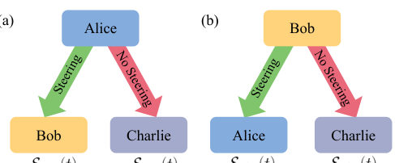
<figcaption class="paper-figure-caption"><b>Fig 2.</b> FIG. 2. (a) Steering diagram with Alice as the measurer, showing the steering from Alice to Bob and Charlie, together with the evolution of EB|A and EC|A from top to bottom for bound states on Alice and Bob but absent on Charlie, i.e., ηA = ηB = 0.06 and ηC = 0.03. (b) Same as (a), but with Bob as the measurer, showing the steering from Bob to Alice and Charlie. The solid surfaces are numerical results, and the golden wireframes are analytical solutions. The green tetrahe- dron cannot enclose the steady QSE, indicating entanglement. In all plots, we use ωc = 20ω0 and q = 3/4.</figcaption>
</figure>
<figure class="paper-figure-card">

<figcaption class="paper-figure-caption"><b>Fig 3.</b> FIG. 3. (a) Steering diagram with Alice as the measurer, showing the steering from Alice to Bob and Charlie, together with the evolution of EB|A and EC|A from top to bottom for a bound state only on Bob, i.e., ηB = 0.06 and ηA = ηC = 0.03. (b) Same as (a), but with Bob as the measurer, showing the steering from Bob to Alice and Charlie. The solid surfaces are numerical results, and the golden wireframes are analytical solutions. The green tetrahedron can enclose the steady QSE, indicating separability. In all plots, we use ωc = 20ω0 and q = 3/4.</figcaption>
</figure>
</div>

<p><strong>Summary.</strong> The paper introduces 'extreme volume monogamy' by showing that selective engineering of bound states between qubits and their environments can control quantum steering. By ensuring these bound states exist only for trusted parties, the authors demonstrate a method to completely eliminate information leakage from an untrusted third party while maintaining useful correlations among the trusted pair.</p>
<p><strong>Why it may be interesting.</strong> This work provides a concrete physical mechanism—selective environmental coupling—to enforce information theoretic constraints (monogamy relations) in open quantum systems, which is highly relevant for secure quantum communication protocols.</p>
<details>
<summary>Detailed structure</summary>
<p><strong>Main problem.</strong> The goal is to achieve 'extreme volume monogamy' by selectively suppressing quantum information leakage from an untrusted third party while preserving essential correlations between trusted parties in open quantum systems.</p>
<p><strong>Main result.</strong> Selective engineering of bound states within local qubit-environment subsystems can completely suppress the untrusted party's Quantum Steering Ellipsoid (QSE) volume to zero, without affecting the finite QSE volumes between the trusted parties.</p>
<p><strong>Method.</strong> The analysis uses the Quantum Steering Ellipsoid (QSE) framework applied to a tripartite open quantum system evolving under non-Markovian dynamics derived from tracing out environmental degrees of freedom.</p>
<p><strong>Model / system.</strong> A tripartite open quantum system involving three qubits (Alice, Bob, Charlie), each coupled independently to its own zero-temperature bosonic environment. The evolution is governed by a master equation analyzed in the non-Markovian regime.</p>
<p><strong>Key observables.</strong> Quantum Steering Ellipsoid (QSE) Volume ($v$), which quantifies steerability; the existence and energy of environmental bound states ($E_b$).</p>
<p><strong>Important parameters / regimes.</strong> The degree of coupling to the environment ($\eta$ parameters), which determines whether a bound state is formed.</p>
<p><strong>Assumptions / limitations.</strong> Independent coupling of qubits to their environments (Ohmic-family spectral density); analysis relies on comparing Markovian vs. non-Markovian dynamics.</p>
<p><strong>Figures summary.</strong> Figures illustrate QSE evolution, showing that when bound states are selectively engineered onto the trusted parties but absent for the untrusted party, the latter's QSE volume collapses to zero while the former remain finite.</p>
<p><strong>Paper structure.</strong> The paper systematically analyzes four scenarios (three-sided, two-sided, one-sided, none) of bound state engineering, demonstrating how the presence or absence of these states dictates whether volume monogamy is trivial (collapse) or protected (finite volume).</p>
</details>
<details>
<summary>Abstract</summary>
<p>Quantum steering ellipsoid (QSE) provides a faithful representation of a two-qubit state. When extended to tripartite systems, the steerability from a trusted party to different receivers is subject to volume monogamy relations, which only constrain the total steerability but cannot individually eliminate the steerability of an untrusted third party, leaving a potential channel for information leakage via steering. Here, we show that this residual steerability can be completely suppressed by selectively engineering bound states in local qubit-environment subsystems, without compromising the steerability between trusted parties. Specifically, when bound states are formed in the subsystems formed by the trusted parties and their environments but absent in the untrusted one, the untrusted party's QSE volume decays to zero, while the trusted party's QSE volume remains finite. Our results establish selective bound-state engineering as a mechanism for extreme volume monogamy, with potential applications in secure quantum communication with an untrusted third party.</p>
</details>
<p><sub><a href="#top">↑ back to top</a></sub></p>
<hr>
<p>
<a href="index.html">← Index</a>
 · <a href="papers_02.html">Next →</a>
</p>
<hr>

</body>
</html>
